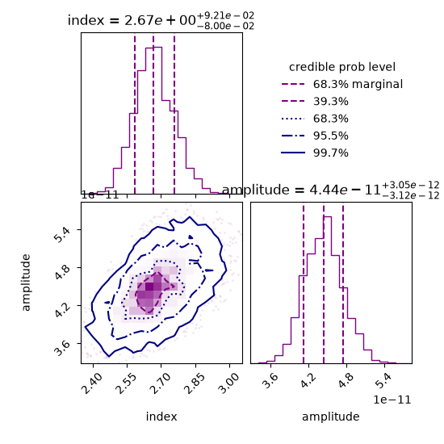

Note
Go to the end to download the full example code or to run this example in your browser via Binder.
Bayesian analysis with nested sampling#
A demonstration of a Bayesian analysis using the nested sampling technique.
Context#
1. Bayesian analysis#
Bayesian inference uses prior knowledge, in the form of a prior distribution, in order to estimate posterior probabilities which we traditionally visualise in the form of corner plots. These distributions contain more information than a maximum likelihood fit as they reveal not only the “best model” but provide a more accurate representation of errors and correlation between parameters. In particular, non-Gaussian degeneracies are complex to estimate with a maximum likelihood approach.
2. Limitations of the Markov Chain Monte Carlo approach#
A well-known approach to estimate this posterior distribution is the Markov Chain Monte Carlo (MCMC). This uses an ensemble of walkers to produce a chain of samples that after a convergence period will reach a stationary state. Once convergence is reached, the successive elements of the chain are samples of the target posterior distribution. However, the weakness of the MCMC approach lies in the “Once convergence” part. If the walkers are started far from the best likelihood region, the convergence time can be long or never reached if the walkers fall in a local minima. The choice of the initialisation point can become critical for complex models with a high number of dimensions and the ability of these walkers to escape a local minimum or to accurately describe a complex likelihood space is not guaranteed.
3. Nested sampling approach#
To overcome these issues, the nested sampling (NS) algorithm has gained traction in physics and astronomy. It is a Monte Carlo algorithm for computing an integral of the likelihood function over the prior model parameter space introduced in Skilling, 2004. The method performs this integral by evolving a collection of points through the parameter space (see recent reviews from Ashton et al., 2022, and Buchner, 2023). Without going into too many details, one important specificity of the NS method is that it starts from the entire parameter space and evolves a collection of live points to map all minima (including multiple modes if any), whereas Markov Chain Monte Carlo methods require an initialisation point and the walkers will explore the local likelihood. The ability of these walkers to escape a local minimum or to accurately describe a complex likelihood space is not guaranteed. This is a fundamental difference with MCMC or Minuit which will only ever probe the vicinity along their minimisation paths and do not have an overview of the global likelihood landscape. The analysis using the NS framework is more CPU time consuming than a standard classical fit, but it provides the full posterior distribution for all parameters, which is out of reach with traditional fitting techniques (N*(N-1)/2 contour plots to generate). In addition, it is more robust to the choice of initialisation, requires less human intervention and is therefore readily integrated in pipeline analysis. In Gammapy, we provide several NS backends: UltraNest and Nautilus. UltraNest is a package that implements the NS algorithm and is used in many astrophysical applications. Nautilus is a more recent implementation of the NS algorithm that exploits neural networks to learn a likelihood function emulator to propose new live points. It is designed to be faster and more efficient than UltraNest, especially for high-dimensional problems. For a nice visualisation of the NS method see here: sampling visualisation. And for a tutorial of UltraNest applied to X-ray fitting with concrete examples and questions see: BXA Tutorial.
See the UltraNest docs here). Note: please cite UltraNest if used for a paper If you are using the “UltraNest” library for a paper, please follow its citation scheme: Cite UltraNest.
See the Nautilus docs here). Note: please cite Nautilus if used for a paper If you are using the “Nautilus” library for a paper, please follow its citation scheme: Cite Nautilus.
Proposed approach#
In this example, we will perform a Bayesian analysis with multiple 1D spectra of the Crab nebula data and investigate their posterior distributions.
Setup#
As usual, we’ll start with some setup …
import matplotlib.pyplot as plt
import numpy as np
import astropy.units as u
from gammapy.datasets import Datasets
from gammapy.datasets import SpectrumDatasetOnOff
from gammapy.modeling.models import (
SkyModel,
UniformPrior,
LogUniformPrior,
)
from gammapy.modeling.sampler import Sampler
from gammapy.estimators import FluxCollectionEstimator
from gammapy.visualization import plot_samples_violin_vs_energy
Loading the spectral datasets#
Here we will load a few Crab 1D spectral data for which we will do a fit.
Model definition#
Now we want to define the spectral model that will be fitted to the data. The Crab spectra will be fitted here with a simple powerlaw for simplicity.
model = SkyModel.create(spectral_model="pl", name="crab")
Warning
Priors definition: Unlike a traditional fit where priors on the parameters are optional, here it is inherent to the Bayesian approach and are therefore mandatory.
In this case we will set (min,max) prior that will define the
boundaries in which the sampling will be performed.
Note that it is usually recommended to use a LogUniformPrior for
the parameters that have a large amplitude range like the
amplitude parameter.
A UniformPrior means that the samples will be drawn with uniform
probability between the (min,max) values in the linear or log space
in the case of a LogUniformPrior.
model.spectral_model.amplitude.prior = LogUniformPrior(min=1e-12, max=1e-10)
model.spectral_model.index.prior = UniformPrior(min=1, max=5)
datasets.models = [model]
print(datasets.models)
DatasetModels
Component 0: SkyModel
Name : crab
Datasets names : None
Spectral model type : PowerLawSpectralModel
Spatial model type :
Temporal model type :
Parameters:
index : 2.000 +/- 0.00
amplitude : 1.00e-12 +/- 0.0e+00 1 / (TeV s cm2)
reference (frozen): 1.000 TeV
Defining the sampler and options#
As for the Fit object, the Sampler object can receive
different backends.
The Sampler comes with “reasonable” default parameters, but you can
change them via the options dictionary, using the backend’s own option names.
Gammapy passes each option to the backend sampler constructor or to its run method.
Here is a short description of the most relevant UltraNest options that you
could change:
min_num_live_points: minimum number of live points throughout the run. More points allow to discover multiple peaks if existing, but is slower. To test the Prior boundaries and for debugging, a lower number (~100) can be used before a production run with more points (~400 or more).frac_remain: the cut-off condition for the integration, set by the maximum allowed fraction of posterior mass left in the live points vs the dead points. High values (e.g., 0.5) are faster and can be used if the posterior distribution is a relatively simple shape. A low value (1e-1, 1e-2) is optimal for finding peaks, but slower.log_dir: directory where the output files will be stored. If set to None, no files will be written. If set to a string, a directory will be created containing the ongoing status of the run and final results. For time consuming analysis, it is highly recommended to use that option to monitor the run and restart it in case of a crash (withresume=True).
More information about the UltraNest options can be found in the UltraNest docs.
More information about the Nautilus options can be found in the Nautilus docs.
A few useful options for Nautilus are:
n_live: number of live points. Equivalent ofmin_num_live_pointsin UltraNest. Due to a different methodology the recommended number of live points should be higher than in UltraNest (1000-3000) while still being faster in high-dimensional problems.f_live: fraction of the evidence from live points to use for convergence. Equivalent offrac_remainin UltraNest.pool: Pool used for parallelization of likelihood calls and sampler calculations.filepath: file path with .hdf5 extension (not directory path) where the output files will be stored.
Backend comparison: For a comparison between the two backends methods, see here. For a gamma-ray analysis, current testing shows that UltraNest can be faster (or equivalent) than Nautilus for low-dimensional problems (1-5 parameters) and Nautilus is faster for high-dimensional problems (>10 parameters) but this of course case specific. If your analysis is dominated by likelihood evaluation time, the parallelisation of the likelihood evaluation in Nautilus (using multiprocessing, just setting pool=nCPUs in the sampler options) has a simpler setup than UltraNest (MPI) and can be more efficient on laptops. Notably, multiprocessing with Nautilus can work in a Jupyter notebook while MPI with UltraNest is not supported in a notebook.
Important note: unlike the MCMC method, you don’t need to define the number of steps for which the sampler will run. The algorithm will automatically stop once a convergence criteria has been reached.
Next we can run the sampler on a given dataset. No options are accepted in the run method.
[ultranest] Sampling 400 live points from prior ...
Mono-modal Volume: ~exp(-3.85) * Expected Volume: exp(0.00) Quality: ok
index : +1.0|************************************************| +5.0
amplitude: +1.0e-12|************************************** ******* *| +1.0e-10
Z=-inf(0.00%) | Like=-5265.02..-60.98 [-5265.0166..-347.3664] | it/evals=0/401 eff=0.0000% N=400
Z=-545.5(0.00%) | Like=-539.25..-60.98 [-5265.0166..-347.3664] | it/evals=36/437 eff=97.2973% N=400
Z=-543.3(0.00%) | Like=-536.90..-60.98 [-5265.0166..-347.3664] | it/evals=40/442 eff=95.2381% N=400
Z=-514.0(0.00%) | Like=-506.78..-60.98 [-5265.0166..-347.3664] | it/evals=75/479 eff=94.9367% N=400
Z=-510.0(0.00%) | Like=-504.43..-60.98 [-5265.0166..-347.3664] | it/evals=80/484 eff=95.2381% N=400
Mono-modal Volume: ~exp(-4.26) * Expected Volume: exp(-0.23) Quality: ok
index : +1.0|************************************************| +5.0
amplitude: +1.0e-12|************************************** ****** *| +1.0e-10
Z=-502.6(0.00%) | Like=-497.24..-60.98 [-5265.0166..-347.3664] | it/evals=90/494 eff=95.7447% N=400
Z=-472.7(0.00%) | Like=-466.52..-60.41 [-5265.0166..-347.3664] | it/evals=120/530 eff=92.3077% N=400
Z=-449.4(0.00%) | Like=-442.39..-60.08 [-5265.0166..-347.3664] | it/evals=153/567 eff=91.6168% N=400
Z=-441.9(0.00%) | Like=-433.75..-60.08 [-5265.0166..-347.3664] | it/evals=160/575 eff=91.4286% N=400
Mono-modal Volume: ~exp(-4.26) Expected Volume: exp(-0.45) Quality: ok
index : +1.0|************************************************| +5.0
amplitude: +1.0e-12|************************************** ********| +1.0e-10
Z=-416.0(0.00%) | Like=-409.84..-60.08 [-5265.0166..-347.3664] | it/evals=193/609 eff=92.3445% N=400
Z=-411.5(0.00%) | Like=-405.06..-60.08 [-5265.0166..-347.3664] | it/evals=200/620 eff=90.9091% N=400
Z=-391.4(0.00%) | Like=-380.94..-60.08 [-5265.0166..-347.3664] | it/evals=232/657 eff=90.2724% N=400
Z=-381.8(0.00%) | Like=-374.67..-60.08 [-5265.0166..-347.3664] | it/evals=240/666 eff=90.2256% N=400
Mono-modal Volume: ~exp(-5.05) * Expected Volume: exp(-0.67) Quality: ok
index : +1.0| **********************************************| +5.0
amplitude: +1.0e-12| ************************************** ********| +1.0e-10
Z=-359.2(0.00%) | Like=-352.52..-59.30 [-5265.0166..-347.3664] | it/evals=270/701 eff=89.7010% N=400
Z=-347.5(0.00%) | Like=-340.46..-59.30 [-346.1867..-193.5493] | it/evals=280/713 eff=89.4569% N=400
Z=-321.5(0.00%) | Like=-314.05..-59.30 [-346.1867..-193.5493] | it/evals=311/750 eff=88.8571% N=400
Z=-313.6(0.00%) | Like=-306.04..-59.30 [-346.1867..-193.5493] | it/evals=320/761 eff=88.6427% N=400
Z=-290.3(0.00%) | Like=-284.11..-59.30 [-346.1867..-193.5493] | it/evals=352/800 eff=88.0000% N=400
Mono-modal Volume: ~exp(-5.05) Expected Volume: exp(-0.90) Quality: ok
index : +1.0| ********************************************| +5.0
amplitude: +1.0e-12| **********************************************| +1.0e-10
Z=-283.8(0.00%) | Like=-277.17..-59.30 [-346.1867..-193.5493] | it/evals=360/814 eff=86.9565% N=400
Z=-267.9(0.00%) | Like=-260.06..-59.30 [-346.1867..-193.5493] | it/evals=391/853 eff=86.3135% N=400
Z=-259.6(0.00%) | Like=-252.15..-59.30 [-346.1867..-193.5493] | it/evals=400/863 eff=86.3931% N=400
Z=-247.1(0.00%) | Like=-241.16..-59.30 [-346.1867..-193.5493] | it/evals=431/900 eff=86.2000% N=400
Z=-244.2(0.00%) | Like=-238.51..-59.30 [-346.1867..-193.5493] | it/evals=440/909 eff=86.4440% N=400
Mono-modal Volume: ~exp(-5.05) Expected Volume: exp(-1.12) Quality: ok
index : +1.0| ******************************************| +5.0
amplitude: +1.0e-12| ************************************ ********| +1.0e-10
Z=-230.2(0.00%) | Like=-223.69..-59.30 [-346.1867..-193.5493] | it/evals=466/941 eff=86.1368% N=400
Z=-225.5(0.00%) | Like=-219.03..-59.30 [-346.1867..-193.5493] | it/evals=480/958 eff=86.0215% N=400
Z=-215.5(0.00%) | Like=-209.52..-59.30 [-346.1867..-193.5493] | it/evals=507/996 eff=85.0671% N=400
Z=-212.1(0.00%) | Like=-205.35..-59.30 [-346.1867..-193.5493] | it/evals=520/1012 eff=84.9673% N=400
Mono-modal Volume: ~exp(-5.78) * Expected Volume: exp(-1.35) Quality: ok
index : +1.0| *****************************************| +5.0
amplitude: +1.0e-12| ****************************** *************| +1.0e-10
Z=-204.5(0.00%) | Like=-198.78..-59.30 [-346.1867..-193.5493] | it/evals=540/1041 eff=84.2434% N=400
Z=-198.5(0.00%) | Like=-192.65..-59.30 [-193.4628..-133.7371] | it/evals=560/1070 eff=83.5821% N=400
Z=-190.7(0.00%) | Like=-184.66..-59.30 [-193.4628..-133.7371] | it/evals=588/1105 eff=83.4043% N=400
Z=-188.3(0.00%) | Like=-182.22..-59.30 [-193.4628..-133.7371] | it/evals=600/1125 eff=82.7586% N=400
Mono-modal Volume: ~exp(-5.78) Expected Volume: exp(-1.57) Quality: ok
index : +1.0| ************************************* | +5.0
amplitude: +1.0e-12| *******************************************| +1.0e-10
Z=-181.5(0.00%) | Like=-175.26..-59.30 [-193.4628..-133.7371] | it/evals=630/1161 eff=82.7858% N=400
Z=-179.5(0.00%) | Like=-173.26..-59.30 [-193.4628..-133.7371] | it/evals=640/1173 eff=82.7943% N=400
Z=-172.4(0.00%) | Like=-165.27..-59.30 [-193.4628..-133.7371] | it/evals=671/1210 eff=82.8395% N=400
Z=-169.5(0.00%) | Like=-162.84..-59.30 [-193.4628..-133.7371] | it/evals=680/1223 eff=82.6245% N=400
Z=-162.2(0.00%) | Like=-155.45..-59.30 [-193.4628..-133.7371] | it/evals=711/1261 eff=82.5784% N=400
Mono-modal Volume: ~exp(-5.87) * Expected Volume: exp(-1.80) Quality: ok
index : +1.0| ********************************* | +5.0
amplitude: +1.0e-12| *************************************** * | +1.0e-10
Z=-160.2(0.00%) | Like=-154.16..-59.30 [-193.4628..-133.7371] | it/evals=720/1280 eff=81.8182% N=400
Z=-155.8(0.00%) | Like=-149.98..-59.30 [-193.4628..-133.7371] | it/evals=748/1318 eff=81.4815% N=400
Z=-153.6(0.00%) | Like=-147.23..-59.12 [-193.4628..-133.7371] | it/evals=760/1334 eff=81.3704% N=400
Z=-149.5(0.00%) | Like=-143.85..-59.12 [-193.4628..-133.7371] | it/evals=787/1371 eff=81.0505% N=400
Z=-147.9(0.00%) | Like=-142.25..-59.12 [-193.4628..-133.7371] | it/evals=800/1387 eff=81.0537% N=400
Mono-modal Volume: ~exp(-6.28) * Expected Volume: exp(-2.02) Quality: ok
index : +1.0| ****************************** | +5.0
amplitude: +1.0e-12| ************************************** | +1.0e-10
Z=-146.3(0.00%) | Like=-139.74..-59.12 [-193.4628..-133.7371] | it/evals=810/1399 eff=81.0811% N=400
Z=-141.4(0.00%) | Like=-134.84..-59.12 [-193.4628..-133.7371] | it/evals=836/1436 eff=80.6950% N=400
Z=-140.8(0.00%) | Like=-134.59..-59.12 [-193.4628..-133.7371] | it/evals=840/1441 eff=80.6916% N=400
Z=-136.8(0.00%) | Like=-130.62..-59.12 [-133.6036..-99.0829] | it/evals=867/1480 eff=80.2778% N=400
Z=-134.9(0.00%) | Like=-128.15..-59.12 [-133.6036..-99.0829] | it/evals=880/1497 eff=80.2188% N=400
Mono-modal Volume: ~exp(-6.28) Expected Volume: exp(-2.25) Quality: ok
index : +1.0| ************************** +4.0 | +5.0
amplitude: +1.0e-12| ********************************** | +1.0e-10
Z=-131.7(0.00%) | Like=-125.52..-59.12 [-133.6036..-99.0829] | it/evals=902/1532 eff=79.6820% N=400
Z=-129.5(0.00%) | Like=-122.94..-59.12 [-133.6036..-99.0829] | it/evals=920/1551 eff=79.9305% N=400
Z=-125.3(0.00%) | Like=-119.08..-59.12 [-133.6036..-99.0829] | it/evals=948/1589 eff=79.7309% N=400
Z=-123.6(0.00%) | Like=-116.81..-59.12 [-133.6036..-99.0829] | it/evals=960/1603 eff=79.8005% N=400
Z=-119.9(0.00%) | Like=-113.78..-59.12 [-133.6036..-99.0829] | it/evals=988/1640 eff=79.6774% N=400
Mono-modal Volume: ~exp(-6.71) * Expected Volume: exp(-2.47) Quality: ok
index : +1.0| +2.0 *********************** +3.8 | +5.0
amplitude: +1.0e-12| ****************************** | +1.0e-10
Z=-119.6(0.00%) | Like=-113.12..-59.12 [-133.6036..-99.0829] | it/evals=990/1642 eff=79.7101% N=400
Z=-118.5(0.00%) | Like=-112.28..-59.12 [-133.6036..-99.0829] | it/evals=1000/1653 eff=79.8085% N=400
Z=-115.2(0.00%) | Like=-109.01..-59.12 [-133.6036..-99.0829] | it/evals=1030/1690 eff=79.8450% N=400
Z=-114.3(0.00%) | Like=-108.11..-59.12 [-133.6036..-99.0829] | it/evals=1040/1703 eff=79.8158% N=400
Z=-112.0(0.00%) | Like=-105.51..-59.12 [-133.6036..-99.0829] | it/evals=1064/1740 eff=79.4030% N=400
Mono-modal Volume: ~exp(-6.71) Expected Volume: exp(-2.70) Quality: ok
index : +1.0| +2.0 ******************** +3.6 | +5.0
amplitude: +1.0e-12| *************************** +7.6e-11 | +1.0e-10
Z=-109.5(0.00%) | Like=-102.64..-59.12 [-133.6036..-99.0829] | it/evals=1080/1767 eff=79.0051% N=400
Z=-106.6(0.00%) | Like=-100.29..-58.80 [-133.6036..-99.0829] | it/evals=1107/1805 eff=78.7900% N=400
Z=-105.0(0.00%) | Like=-98.19..-58.80 [-99.0161..-77.6753] | it/evals=1120/1818 eff=78.9845% N=400
Z=-101.5(0.00%) | Like=-94.93..-58.80 [-99.0161..-77.6753] | it/evals=1146/1855 eff=78.7629% N=400
Z=-100.3(0.00%) | Like=-94.03..-58.80 [-99.0161..-77.6753] | it/evals=1160/1877 eff=78.5376% N=400
Mono-modal Volume: ~exp(-7.15) * Expected Volume: exp(-2.92) Quality: ok
index : +1.0| +2.1 ***************** +3.5 | +5.0
amplitude: +1.0e-12| +2.4e-11 *********************** +7.1e-11 | +1.0e-10
Z=-99.6(0.00%) | Like=-93.02..-58.80 [-99.0161..-77.6753] | it/evals=1170/1893 eff=78.3657% N=400
Z=-97.2(0.00%) | Like=-90.56..-58.80 [-99.0161..-77.6753] | it/evals=1199/1931 eff=78.3148% N=400
Z=-97.1(0.00%) | Like=-90.15..-58.80 [-99.0161..-77.6753] | it/evals=1200/1932 eff=78.3290% N=400
Z=-93.8(0.00%) | Like=-86.86..-58.80 [-99.0161..-77.6753] | it/evals=1228/1969 eff=78.2664% N=400
Z=-92.8(0.00%) | Like=-86.44..-58.80 [-99.0161..-77.6753] | it/evals=1240/1990 eff=77.9874% N=400
Mono-modal Volume: ~exp(-7.57) * Expected Volume: exp(-3.15) Quality: ok
index : +1.0| +2.2 **************** +3.4 | +5.0
amplitude: +1.0e-12| +2.6e-11 *********************** +7.0e-11 | +1.0e-10
Z=-91.7(0.00%) | Like=-85.41..-58.80 [-99.0161..-77.6753] | it/evals=1260/2019 eff=77.8258% N=400
Z=-90.7(0.00%) | Like=-84.79..-58.80 [-99.0161..-77.6753] | it/evals=1280/2048 eff=77.6699% N=400
Z=-89.5(0.00%) | Like=-83.39..-58.80 [-99.0161..-77.6753] | it/evals=1307/2086 eff=77.5208% N=400
Z=-88.9(0.00%) | Like=-82.66..-58.80 [-99.0161..-77.6753] | it/evals=1320/2102 eff=77.5558% N=400
Z=-87.4(0.00%) | Like=-80.85..-58.76 [-99.0161..-77.6753] | it/evals=1349/2137 eff=77.6626% N=400
Mono-modal Volume: ~exp(-7.74) * Expected Volume: exp(-3.37) Quality: ok
index : +1.0| +2.2 ************** +3.3 | +5.0
amplitude: +1.0e-12| +2.7e-11 ********************* +6.7e-11 | +1.0e-10
Z=-87.4(0.00%) | Like=-80.77..-58.76 [-99.0161..-77.6753] | it/evals=1350/2138 eff=77.6755% N=400
Z=-86.8(0.00%) | Like=-80.45..-58.76 [-99.0161..-77.6753] | it/evals=1360/2149 eff=77.7587% N=400
Z=-85.2(0.00%) | Like=-78.58..-58.76 [-99.0161..-77.6753] | it/evals=1389/2186 eff=77.7716% N=400
Z=-84.6(0.00%) | Like=-78.20..-58.76 [-99.0161..-77.6753] | it/evals=1400/2199 eff=77.8210% N=400
Z=-83.5(0.00%) | Like=-76.98..-58.76 [-77.6749..-68.6611] | it/evals=1426/2236 eff=77.6688% N=400
Mono-modal Volume: ~exp(-7.86) * Expected Volume: exp(-3.60) Quality: ok
index : +1.0| +2.2 ************* +3.2 | +5.0
amplitude: +1.0e-12| +2.9e-11 ****************** +6.4e-11 | +1.0e-10
Z=-82.8(0.00%) | Like=-76.39..-58.76 [-77.6749..-68.6611] | it/evals=1440/2259 eff=77.4610% N=400
Z=-81.8(0.00%) | Like=-75.35..-58.76 [-77.6749..-68.6611] | it/evals=1468/2296 eff=77.4262% N=400
Z=-81.2(0.00%) | Like=-74.50..-58.76 [-77.6749..-68.6611] | it/evals=1480/2310 eff=77.4869% N=400
Z=-80.1(0.00%) | Like=-73.62..-58.76 [-77.6749..-68.6611] | it/evals=1505/2346 eff=77.3381% N=400
Z=-79.6(0.00%) | Like=-73.09..-58.76 [-77.6749..-68.6611] | it/evals=1520/2370 eff=77.1574% N=400
Mono-modal Volume: ~exp(-7.88) * Expected Volume: exp(-3.82) Quality: ok
index : +1.0| +2.3 *********** +3.2 | +5.0
amplitude: +1.0e-12| +3.0e-11 **************** +6.1e-11 | +1.0e-10
Z=-79.2(0.00%) | Like=-72.66..-58.76 [-77.6749..-68.6611] | it/evals=1530/2382 eff=77.1948% N=400
Z=-78.2(0.00%) | Like=-71.68..-58.76 [-77.6749..-68.6611] | it/evals=1558/2418 eff=77.2052% N=400
Z=-78.2(0.00%) | Like=-71.53..-58.76 [-77.6749..-68.6611] | it/evals=1560/2420 eff=77.2277% N=400
Z=-77.1(0.00%) | Like=-70.67..-58.76 [-77.6749..-68.6611] | it/evals=1589/2457 eff=77.2484% N=400
Z=-76.8(0.00%) | Like=-70.38..-58.76 [-77.6749..-68.6611] | it/evals=1600/2470 eff=77.2947% N=400
Mono-modal Volume: ~exp(-7.97) * Expected Volume: exp(-4.05) Quality: ok
index : +1.0| +2.3 *********** +3.1 | +5.0
amplitude: +1.0e-12| +3.2e-11 *************** +6.0e-11 | +1.0e-10
Z=-76.3(0.00%) | Like=-70.02..-58.76 [-77.6749..-68.6611] | it/evals=1620/2502 eff=77.0695% N=400
Z=-75.9(0.00%) | Like=-69.54..-58.76 [-77.6749..-68.6611] | it/evals=1640/2526 eff=77.1402% N=400
Z=-75.2(0.01%) | Like=-68.77..-58.76 [-77.6749..-68.6611] | it/evals=1668/2566 eff=77.0083% N=400
Z=-74.9(0.01%) | Like=-68.51..-58.76 [-68.6607..-66.0846] | it/evals=1680/2582 eff=76.9936% N=400
Z=-74.4(0.01%) | Like=-67.95..-58.76 [-68.6607..-66.0846] | it/evals=1705/2619 eff=76.8364% N=400
Mono-modal Volume: ~exp(-8.03) * Expected Volume: exp(-4.27) Quality: ok
index : +1.0| +2.3 ********* +3.0 | +5.0
amplitude: +1.0e-12| +3.3e-11 ************* +5.8e-11 | +1.0e-10
Z=-74.3(0.02%) | Like=-67.90..-58.76 [-68.6607..-66.0846] | it/evals=1710/2627 eff=76.7849% N=400
Z=-74.1(0.02%) | Like=-67.78..-58.76 [-68.6607..-66.0846] | it/evals=1720/2639 eff=76.8200% N=400
Z=-73.6(0.03%) | Like=-67.28..-58.76 [-68.6607..-66.0846] | it/evals=1744/2674 eff=76.6931% N=400
Z=-73.4(0.04%) | Like=-66.97..-58.76 [-68.6607..-66.0846] | it/evals=1760/2700 eff=76.5217% N=400
Z=-73.0(0.05%) | Like=-66.69..-58.76 [-68.6607..-66.0846] | it/evals=1781/2735 eff=76.2741% N=400
Z=-72.7(0.07%) | Like=-66.38..-58.76 [-68.6607..-66.0846] | it/evals=1799/2764 eff=76.0998% N=400
Mono-modal Volume: ~exp(-8.36) * Expected Volume: exp(-4.50) Quality: ok
index : +1.0| +2.4 ********* +3.0 | +5.0
amplitude: +1.0e-12| +3.4e-11 ************* +5.7e-11 | +1.0e-10
Z=-72.7(0.07%) | Like=-66.32..-58.76 [-68.6607..-66.0846] | it/evals=1800/2765 eff=76.1099% N=400
Z=-72.2(0.11%) | Like=-65.91..-58.76 [-66.0823..-65.6726] | it/evals=1830/2801 eff=76.2182% N=400
Z=-72.1(0.13%) | Like=-65.65..-58.76 [-65.6519..-65.6269] | it/evals=1840/2814 eff=76.2220% N=400
Z=-71.7(0.20%) | Like=-65.24..-58.76 [-65.2367..-65.2260] | it/evals=1867/2851 eff=76.1730% N=400
Z=-71.5(0.23%) | Like=-65.12..-58.76 [-65.1173..-65.0974] | it/evals=1880/2868 eff=76.1750% N=400
Mono-modal Volume: ~exp(-8.91) * Expected Volume: exp(-4.73) Quality: ok
index : +1.0| +2.4 ******** +3.0 | +5.0
amplitude: +1.0e-12| +3.5e-11 *********** +5.6e-11 | +1.0e-10
Z=-71.4(0.27%) | Like=-65.01..-58.76 [-65.0364..-65.0134] | it/evals=1890/2886 eff=76.0257% N=400
Z=-71.0(0.38%) | Like=-64.58..-58.76 [-64.5836..-64.5808]*| it/evals=1920/2919 eff=76.2207% N=400
Z=-70.7(0.51%) | Like=-64.36..-58.76 [-64.3608..-64.3529]*| it/evals=1944/2955 eff=76.0861% N=400
Z=-70.5(0.62%) | Like=-64.13..-58.76 [-64.1608..-64.1333] | it/evals=1960/2977 eff=76.0574% N=400
Mono-modal Volume: ~exp(-8.91) Expected Volume: exp(-4.95) Quality: ok
index : +1.0| +2.4 ******* +3.0 | +5.0
amplitude: +1.0e-12| +3.5e-11 *********** +5.5e-11 | +1.0e-10
Z=-70.3(0.78%) | Like=-63.95..-58.76 [-63.9453..-63.9204] | it/evals=1981/3011 eff=75.8713% N=400
Z=-70.1(0.92%) | Like=-63.82..-58.76 [-63.8153..-63.8041] | it/evals=2000/3039 eff=75.7863% N=400
Z=-69.9(1.21%) | Like=-63.41..-58.76 [-63.4092..-63.3896] | it/evals=2027/3075 eff=75.7757% N=400
Z=-69.7(1.37%) | Like=-63.28..-58.76 [-63.2788..-63.2756]*| it/evals=2040/3098 eff=75.6116% N=400
Z=-69.5(1.80%) | Like=-63.01..-58.76 [-63.0095..-63.0041]*| it/evals=2068/3132 eff=75.6955% N=400
Mono-modal Volume: ~exp(-8.96) * Expected Volume: exp(-5.18) Quality: ok
index : +1.0| +2.4 ******* +2.9 | +5.0
amplitude: +1.0e-12| +3.6e-11 ********* +5.4e-11 | +1.0e-10
Z=-69.5(1.82%) | Like=-63.00..-58.76 [-63.0026..-63.0023]*| it/evals=2070/3135 eff=75.6856% N=400
Z=-69.4(1.99%) | Like=-62.86..-58.76 [-62.8563..-62.8498]*| it/evals=2080/3147 eff=75.7190% N=400
Z=-69.2(2.39%) | Like=-62.65..-58.76 [-62.6507..-62.6504]*| it/evals=2099/3171 eff=75.7488% N=400
Z=-69.0(2.87%) | Like=-62.52..-58.76 [-62.5350..-62.5152] | it/evals=2120/3195 eff=75.8497% N=400
Z=-68.9(3.31%) | Like=-62.36..-58.76 [-62.3551..-62.3234] | it/evals=2140/3229 eff=75.6451% N=400
Mono-modal Volume: ~exp(-9.53) * Expected Volume: exp(-5.40) Quality: ok
index : +1.0| +2.5 ****** +2.9 | +5.0
amplitude: +1.0e-12| +3.7e-11 ********* +5.3e-11 | +1.0e-10
Z=-68.7(3.86%) | Like=-62.14..-58.76 [-62.1536..-62.1397] | it/evals=2160/3254 eff=75.6833% N=400
Z=-68.5(4.63%) | Like=-61.96..-58.76 [-61.9605..-61.9526]*| it/evals=2184/3289 eff=75.5971% N=400
Z=-68.4(5.28%) | Like=-61.78..-58.76 [-61.7795..-61.7649] | it/evals=2200/3309 eff=75.6274% N=400
Z=-68.2(6.31%) | Like=-61.62..-58.76 [-61.6161..-61.6118]*| it/evals=2226/3347 eff=75.5344% N=400
Z=-68.1(6.90%) | Like=-61.55..-58.76 [-61.5500..-61.5486]*| it/evals=2240/3367 eff=75.4971% N=400
Mono-modal Volume: ~exp(-9.70) * Expected Volume: exp(-5.63) Quality: ok
index : +1.0| +2.5 ****** +2.9 | +5.0
amplitude: +1.0e-12| +3.8e-11 ******** +5.2e-11 | +1.0e-10
Z=-68.0(7.37%) | Like=-61.48..-58.76 [-61.4836..-61.4778]*| it/evals=2250/3380 eff=75.5034% N=400
Z=-67.9(8.71%) | Like=-61.32..-58.75 [-61.3156..-61.3070]*| it/evals=2279/3416 eff=75.5637% N=400
Z=-67.9(8.74%) | Like=-61.31..-58.75 [-61.3070..-61.2981]*| it/evals=2280/3417 eff=75.5718% N=400
Z=-67.7(9.76%) | Like=-61.15..-58.75 [-61.1544..-61.1435] | it/evals=2299/3454 eff=75.2783% N=400
Z=-67.6(11.04%) | Like=-61.06..-58.75 [-61.0573..-61.0516]*| it/evals=2320/3482 eff=75.2758% N=400
Mono-modal Volume: ~exp(-10.01) * Expected Volume: exp(-5.85) Quality: ok
index : +1.0| +2.5 ***** +2.9 | +5.0
amplitude: +1.0e-12| +3.8e-11 ******* +5.1e-11 | +1.0e-10
Z=-67.5(12.16%) | Like=-60.97..-58.75 [-60.9727..-60.9707]*| it/evals=2340/3508 eff=75.2896% N=400
Z=-67.4(13.39%) | Like=-60.85..-58.75 [-60.8539..-60.8533]*| it/evals=2360/3531 eff=75.3753% N=400
Z=-67.3(15.01%) | Like=-60.75..-58.75 [-60.7453..-60.7356]*| it/evals=2383/3566 eff=75.2685% N=400
Z=-67.2(16.38%) | Like=-60.64..-58.75 [-60.6379..-60.6325]*| it/evals=2400/3589 eff=75.2587% N=400
Z=-67.1(18.07%) | Like=-60.53..-58.75 [-60.5331..-60.5287]*| it/evals=2424/3627 eff=75.1162% N=400
Mono-modal Volume: ~exp(-10.07) * Expected Volume: exp(-6.08) Quality: ok
index : +1.0| +2.5 **** +2.8 | +5.0
amplitude: +1.0e-12| +3.9e-11 ****** +5.0e-11 | +1.0e-10
Z=-67.1(18.50%) | Like=-60.52..-58.75 [-60.5231..-60.5203]*| it/evals=2430/3633 eff=75.1624% N=400
Z=-67.1(19.08%) | Like=-60.48..-58.75 [-60.4848..-60.4814]*| it/evals=2440/3649 eff=75.1000% N=400
Z=-66.9(21.54%) | Like=-60.38..-58.75 [-60.3763..-60.3738]*| it/evals=2471/3685 eff=75.2207% N=400
Z=-66.9(22.23%) | Like=-60.36..-58.75 [-60.3597..-60.3564]*| it/evals=2480/3700 eff=75.1515% N=400
Z=-66.8(24.30%) | Like=-60.29..-58.75 [-60.2857..-60.2822]*| it/evals=2507/3737 eff=75.1274% N=400
Mono-modal Volume: ~exp(-10.47) * Expected Volume: exp(-6.30) Quality: ok
index : +1.0| +2.5 **** +2.8 | +5.0
amplitude: +1.0e-12| +3.9e-11 ****** +4.9e-11 | +1.0e-10
Z=-66.8(25.29%) | Like=-60.23..-58.75 [-60.2336..-60.2315]*| it/evals=2520/3757 eff=75.0670% N=400
Z=-66.7(27.93%) | Like=-60.11..-58.75 [-60.1129..-60.1120]*| it/evals=2548/3793 eff=75.0958% N=400
Z=-66.7(28.98%) | Like=-60.08..-58.75 [-60.0753..-60.0728]*| it/evals=2560/3808 eff=75.1174% N=400
Z=-66.6(31.18%) | Like=-59.98..-58.75 [-59.9824..-59.9817]*| it/evals=2585/3845 eff=75.0363% N=400
Z=-66.5(32.51%) | Like=-59.95..-58.75 [-59.9499..-59.9492]*| it/evals=2600/3866 eff=75.0144% N=400
Mono-modal Volume: ~exp(-10.47) Expected Volume: exp(-6.53) Quality: ok
index : +1.0| +2.5 **** +2.8 | +5.0
amplitude: +1.0e-12| +4.0e-11 ****** +4.9e-11 | +1.0e-10
Z=-66.5(34.69%) | Like=-59.88..-58.75 [-59.8805..-59.8746]*| it/evals=2623/3901 eff=74.9215% N=400
Z=-66.4(36.27%) | Like=-59.85..-58.75 [-59.8450..-59.8426]*| it/evals=2640/3932 eff=74.7452% N=400
Z=-66.4(38.40%) | Like=-59.80..-58.75 [-59.7991..-59.7916]*| it/evals=2665/3969 eff=74.6708% N=400
Z=-66.3(39.69%) | Like=-59.77..-58.75 [-59.7704..-59.7699]*| it/evals=2680/3991 eff=74.6310% N=400
Mono-modal Volume: ~exp(-10.80) * Expected Volume: exp(-6.75) Quality: ok
index : +1.0| +2.6 **** +2.8 | +5.0
amplitude: +1.0e-12| +4.0e-11 ***** +4.9e-11 | +1.0e-10
Z=-66.3(41.55%) | Like=-59.70..-58.75 [-59.7029..-59.7013]*| it/evals=2700/4023 eff=74.5239% N=400
Z=-66.3(43.23%) | Like=-59.66..-58.75 [-59.6615..-59.6603]*| it/evals=2720/4047 eff=74.5818% N=400
Z=-66.2(45.99%) | Like=-59.58..-58.75 [-59.5849..-59.5830]*| it/evals=2751/4082 eff=74.7148% N=400
Z=-66.2(46.73%) | Like=-59.57..-58.75 [-59.5748..-59.5733]*| it/evals=2760/4097 eff=74.6551% N=400
Z=-66.1(49.13%) | Like=-59.53..-58.75 [-59.5253..-59.5231]*| it/evals=2787/4133 eff=74.6585% N=400
Mono-modal Volume: ~exp(-11.31) * Expected Volume: exp(-6.98) Quality: ok
index : +1.0| +2.6 **** +2.8 | +5.0
amplitude: +1.0e-12| +4.1e-11 **** +4.8e-11 | +1.0e-10
Z=-66.1(49.39%) | Like=-59.52..-58.75 [-59.5193..-59.5103]*| it/evals=2790/4137 eff=74.6588% N=400
Z=-66.1(50.29%) | Like=-59.50..-58.75 [-59.4959..-59.4936]*| it/evals=2800/4148 eff=74.7065% N=400
Z=-66.1(52.77%) | Like=-59.44..-58.75 [-59.4405..-59.4402]*| it/evals=2831/4184 eff=74.8150% N=400
Z=-66.0(53.52%) | Like=-59.43..-58.75 [-59.4299..-59.4299]*| it/evals=2840/4195 eff=74.8353% N=400
Z=-66.0(55.96%) | Like=-59.38..-58.75 [-59.3838..-59.3821]*| it/evals=2870/4230 eff=74.9347% N=400
Mono-modal Volume: ~exp(-11.31) Expected Volume: exp(-7.20) Quality: ok
index : +1.0| +2.6 **** +2.8 | +5.0
amplitude: +1.0e-12| +4.1e-11 **** +4.8e-11 | +1.0e-10
Z=-66.0(56.71%) | Like=-59.37..-58.75 [-59.3709..-59.3690]*| it/evals=2880/4242 eff=74.9610% N=400
Z=-66.0(58.45%) | Like=-59.34..-58.75 [-59.3408..-59.3406]*| it/evals=2903/4278 eff=74.8582% N=400
Z=-65.9(59.71%) | Like=-59.32..-58.75 [-59.3234..-59.3228]*| it/evals=2920/4309 eff=74.6994% N=400
Z=-65.9(61.51%) | Like=-59.29..-58.75 [-59.2906..-59.2895]*| it/evals=2945/4348 eff=74.5947% N=400
Z=-65.9(62.62%) | Like=-59.28..-58.75 [-59.2766..-59.2744]*| it/evals=2960/4366 eff=74.6344% N=400
Mono-modal Volume: ~exp(-11.35) * Expected Volume: exp(-7.43) Quality: ok
index : +1.0| +2.6 *** +2.7 | +5.0
amplitude: +1.0e-12| +4.1e-11 **** +4.7e-11 | +1.0e-10
Z=-65.9(63.28%) | Like=-59.27..-58.75 [-59.2665..-59.2664]*| it/evals=2970/4378 eff=74.6606% N=400
Z=-65.8(65.41%) | Like=-59.23..-58.75 [-59.2276..-59.2270]*| it/evals=3000/4412 eff=74.7757% N=400
Z=-65.8(67.31%) | Like=-59.20..-58.75 [-59.2013..-59.2008]*| it/evals=3028/4448 eff=74.8024% N=400
Z=-65.8(68.06%) | Like=-59.19..-58.75 [-59.1913..-59.1912]*| it/evals=3040/4463 eff=74.8216% N=400
Mono-modal Volume: ~exp(-11.35) Expected Volume: exp(-7.65) Quality: ok
index : +1.0| +2.6 ** +2.7 | +5.0
amplitude: +1.0e-12| +4.2e-11 **** +4.7e-11 | +1.0e-10
Z=-65.8(69.72%) | Like=-59.16..-58.75 [-59.1624..-59.1621]*| it/evals=3067/4496 eff=74.8779% N=400
[ultranest] Explored until L=-6e+01
[ultranest] Likelihood function evaluations: 4500
[ultranest] logZ = -65.41 +- 0.09324
[ultranest] Effective samples strategy satisfied (ESS = 1355.4, need >400)
[ultranest] Posterior uncertainty strategy is satisfied (KL: 0.46+-0.07 nat, need <0.50 nat)
[ultranest] Evidency uncertainty strategy is satisfied (dlogz=0.28, need <0.5)
[ultranest] logZ error budget: single: 0.12 bs:0.09 tail:0.26 total:0.28 required:<0.50
[ultranest] done iterating.
logZ = -65.417 +- 0.329
single instance: logZ = -65.417 +- 0.118
bootstrapped : logZ = -65.414 +- 0.198
tail : logZ = +- 0.262
insert order U test : converged: True correlation: inf iterations
index : 2.305 │ ▁ ▁▁▁▁▁▁▁▂▃▃▄▆▅▆▇▇▆▇▅▄▄▄▃▂▂▂▁▁▁▁▁▁ ▁ │3.029 2.671 +- 0.086
amplitude : 0.0000000000336│ ▁▁▁▁▁▁▂▂▄▃▅▅▅▅▆▇▇▇▅▆▆▅▄▃▂▂▂▁▁▁▁▁▁▁▁ ▁ │0.0000000000576 0.0000000000444 +- 0.0000000000032
Understanding the outputs#
In the Jupyter notebook, you should be able to see an interactive visualisation of how the parameter space shrinks which starts from the (min,max) shrinks down towards the optimal parameters.
The output above is filled with interesting information. Here we provide a short description of the most relevant information provided above. For more detailed information see the UltraNest docs.
During the sampling
Z=-68.8(0.53%) | Like=-63.96..-58.75 [-63.9570..-63.9539]*| it/evals=640/1068 eff=73.7327% N=300
Some important information here is:
Progress (0.53%): the completed fraction of the integral. This is not a time progress bar. Stays at zero for a good fraction of the run.
Efficiency (eff value) of the sampling: this indicates out of the proposed new points, how many were accepted. If your efficiency is too small (<<1%), maybe you should revise your priors (e.g use a LogUniform prior for the normalisation).
Final outputs
The final lines indicate that all three “convergence” strategies are satisfied (samples, posterior uncertainty, and evidence uncertainty).
logZ = -65.104 +- 0.292
The main goal of the Nested sampling algorithm is to estimate Z (the Bayesian evidence) which is given above together with an uncertainty. In a similar way to deltaLogLike and deltaAIC, deltaLogZ values can be used for model comparison. For more information see : on the use of the evidence for model comparison. An interesting comparison of the efficiency and false discovery rate of model selection with deltaLogLike and deltaLogZ is given in Appendix C of Buchner et al., 2014.
Results stored on disk
if log_dir is set to a name where the results will be stored, then
a directory is created containing many useful results and plots.
A description of these outputs is given in the Ultranest
docs.
Results#
Within a Bayesian analysis, the concept of best-fit has to be viewed differently from what is done in a gradient descent fit.
The output of the Bayesian analysis is the posterior distribution and there is no “best-fit” output. One has to define, based on the posteriors, what we want to consider as “best-fit” and several options are possible:
the mean of the distribution
the median
the lowest likelihood value
By default the DatasetModels will be updated with the mean of
the posterior distributions.
print(result_joint.models)
DatasetModels
Component 0: SkyModel
Name : crab
Datasets names : None
Spectral model type : PowerLawSpectralModel
Spatial model type :
Temporal model type :
Parameters:
index : 2.671 +/- 0.09
amplitude : 4.44e-11 +/- 3.2e-12 1 / (TeV s cm2)
reference (frozen): 1.000 TeV
The Sampler class returns a very rich dictionary.
The most “standard” information about the posterior distributions can
be found in :
print(result_joint.sampler_results["posterior"])
{'mean': [2.670637025989543, 4.440693133669857e-11], 'stdev': [0.0858743309413746, 3.2014431711589347e-12], 'median': [2.6660622163185073, 4.4371030146436925e-11], 'errlo': [2.587304595899072, 4.1033703334294683e-11], 'errup': [2.7596076488423424, 4.7599199704369804e-11], 'information_gain_bits': [2.6787346986892677, 3.093802921861755]}
Besides mean, errors, etc, an interesting value is the
information gain which estimates how much the posterior
distribution has shrunk with respect to the prior (i.e. how much
we’ve learned). A value < 1 means that the parameter is poorly
constrained within the prior range (we haven’t learned much with respect to our prior assumption).
For a physical interpretation of the information gain see this
example.
The SamplerResult dictionary contains also other interesting
information :
print(result_joint.sampler_results.keys())
dict_keys(['niter', 'logz', 'logzerr', 'logz_bs', 'logz_single', 'logzerr_tail', 'logzerr_bs', 'ess', 'H', 'Herr', 'posterior', 'weighted_samples', 'samples', 'maximum_likelihood', 'ncall', 'paramnames', 'logzerr_single', 'insertion_order_MWW_test'])
Of particular interest, the samples used in the process to approximate the posterior distribution can be accessed via :
for i, n in enumerate(model.parameters.free_parameters.names):
s = result_joint.samples[:, i]
fig, ax = plt.subplots()
ax.hist(s, bins=30)
ax.axvline(np.mean(s), ls="--", color="red")
ax.set_xlabel(n)
plt.show()


While the above plots are interesting, the real strength of the Bayesian analysis is to visualise all parameters correlations which is usually done using “corner plots”. Ultranest corner plot function is a wrapper around the corner package. See the above link for optional keywords. Other packages exist for corner plots, like chainconsumer which is discussed later in this tutorial.
from ultranest.plot import cornerplot
cornerplot(
result_joint.sampler_results,
plot_datapoints=True,
plot_density=True,
bins=20,
title_fmt=".2e",
smooth=False,
)
plt.show()

Spectral model error band from samples#
To compute the spectral error band (“butterfly plots”), we will directly use the samples of the posterior distribution. This is more robust as compared to the traditional method of using the covariance matrix of the parameters which implicitly assumes Gaussian errors while for the posterior distribution there is no shape assumed. This difference can become significant when the parameter errors are non-Gaussian. For this we will need to convert the list of samples back to the spectral model parameters with the relevant units (e.g. normalisation units).
def get_samples_from_posterior(spectral_model, results):
"""
Create a list of spectral parameters with correct units
from the unitless parameters returned by the sampler.
"""
n_samples = results.samples.shape[0]
samples = []
for p in spectral_model.parameters:
try:
idx = spectral_model.parameters.free_unique_parameters.index(p)
samples.append(results.samples[:, idx] * p.unit)
except ValueError:
samples.append(np.ones(n_samples) * p.quantity)
return samples
samples = get_samples_from_posterior(datasets.models[0].spectral_model, result_joint)
Next we can provide these samples to the plot_error
method.

Individual run analysis#
Now we’ll analyse several Crab runs individually so that we can compare them.
result_0 = sampler.run(datasets[0])
result_1 = sampler.run(datasets[1])
result_2 = sampler.run(datasets[2])
[ultranest] Sampling 400 live points from prior ...
Mono-modal Volume: ~exp(-4.50) * Expected Volume: exp(0.00) Quality: ok
index : +1.0|************************************************| +5.0
amplitude: +1.0e-12|********************************************* **| +1.0e-10
Z=-inf(0.00%) | Like=-2168.26..-21.46 [-2168.2629..-108.2394] | it/evals=0/401 eff=0.0000% N=400
Z=-181.3(0.00%) | Like=-175.38..-20.82 [-2168.2629..-108.2394] | it/evals=40/441 eff=97.5610% N=400
Z=-167.1(0.00%) | Like=-162.24..-20.82 [-2168.2629..-108.2394] | it/evals=80/487 eff=91.9540% N=400
Mono-modal Volume: ~exp(-4.50) Expected Volume: exp(-0.23) Quality: ok
index : +1.0|************************************************| +5.0
amplitude: +1.0e-12|************************************ ******* **| +1.0e-10
Z=-153.2(0.00%) | Like=-148.16..-20.82 [-2168.2629..-108.2394] | it/evals=120/532 eff=90.9091% N=400
Z=-143.5(0.00%) | Like=-138.27..-20.82 [-2168.2629..-108.2394] | it/evals=160/577 eff=90.3955% N=400
Mono-modal Volume: ~exp(-5.17) * Expected Volume: exp(-0.45) Quality: ok
index : +1.0|************************************************| +5.0
amplitude: +1.0e-12|************************************ ******* **| +1.0e-10
Z=-134.9(0.00%) | Like=-129.42..-20.82 [-2168.2629..-108.2394] | it/evals=180/601 eff=89.5522% N=400
Z=-130.5(0.00%) | Like=-125.41..-20.82 [-2168.2629..-108.2394] | it/evals=200/627 eff=88.1057% N=400
Z=-120.7(0.00%) | Like=-115.87..-20.82 [-2168.2629..-108.2394] | it/evals=240/679 eff=86.0215% N=400
Mono-modal Volume: ~exp(-5.17) Expected Volume: exp(-0.67) Quality: ok
index : +1.0| **********************************************| +5.0
amplitude: +1.0e-12| *********************************** ******** * | +1.0e-10
Z=-113.3(0.00%) | Like=-108.17..-20.82 [-108.1696..-69.6676] | it/evals=280/728 eff=85.3659% N=400
Z=-105.0(0.00%) | Like=-99.99..-20.82 [-108.1696..-69.6676] | it/evals=318/773 eff=85.2547% N=400
Z=-104.7(0.00%) | Like=-99.65..-20.82 [-108.1696..-69.6676] | it/evals=320/775 eff=85.3333% N=400
Mono-modal Volume: ~exp(-5.39) * Expected Volume: exp(-0.90) Quality: ok
index : +1.0| ********************************************| +5.0
amplitude: +1.0e-12| ********************************** ****** * | +1.0e-10
Z=-96.3(0.00%) | Like=-91.27..-20.74 [-108.1696..-69.6676] | it/evals=360/822 eff=85.3081% N=400
Z=-90.6(0.00%) | Like=-85.36..-20.74 [-108.1696..-69.6676] | it/evals=400/870 eff=85.1064% N=400
Z=-85.1(0.00%) | Like=-80.08..-20.61 [-108.1696..-69.6676] | it/evals=440/932 eff=82.7068% N=400
Mono-modal Volume: ~exp(-5.39) Expected Volume: exp(-1.12) Quality: ok
index : +1.0| *******************************************| +5.0
amplitude: +1.0e-12| ******************************* ********* | +1.0e-10
Z=-81.1(0.00%) | Like=-76.05..-20.61 [-108.1696..-69.6676] | it/evals=480/987 eff=81.7717% N=400
Z=-76.1(0.00%) | Like=-71.36..-20.61 [-108.1696..-69.6676] | it/evals=520/1039 eff=81.3772% N=400
Mono-modal Volume: ~exp(-5.58) * Expected Volume: exp(-1.35) Quality: ok
index : +1.0| *************************************** | +5.0
amplitude: +1.0e-12| ************************************** | +1.0e-10
Z=-74.4(0.00%) | Like=-69.72..-20.61 [-108.1696..-69.6676] | it/evals=540/1073 eff=80.2377% N=400
Z=-73.3(0.00%) | Like=-68.90..-20.61 [-69.6134..-48.4368] | it/evals=560/1105 eff=79.4326% N=400
Z=-70.9(0.00%) | Like=-65.87..-20.61 [-69.6134..-48.4368] | it/evals=600/1157 eff=79.2602% N=400
Mono-modal Volume: ~exp(-5.66) * Expected Volume: exp(-1.57) Quality: ok
index : +1.0| ********************************** | +5.0
amplitude: +1.0e-12| ********************************** +7.9e-11| +1.0e-10
Z=-68.3(0.00%) | Like=-62.95..-20.61 [-69.6134..-48.4368] | it/evals=630/1199 eff=78.8486% N=400
Z=-67.5(0.00%) | Like=-62.52..-20.61 [-69.6134..-48.4368] | it/evals=640/1216 eff=78.4314% N=400
Z=-64.9(0.00%) | Like=-59.90..-20.61 [-69.6134..-48.4368] | it/evals=680/1273 eff=77.8923% N=400
Mono-modal Volume: ~exp(-5.80) * Expected Volume: exp(-1.80) Quality: ok
index : +1.0| ****************************** +4.1 | +5.0
amplitude: +1.0e-12| ****************************** +7.1e-11 | +1.0e-10
Z=-61.8(0.00%) | Like=-56.33..-20.61 [-69.6134..-48.4368] | it/evals=720/1329 eff=77.5027% N=400
Z=-58.8(0.00%) | Like=-53.78..-20.61 [-69.6134..-48.4368] | it/evals=760/1384 eff=77.2358% N=400
Z=-55.5(0.00%) | Like=-49.67..-20.61 [-69.6134..-48.4368] | it/evals=800/1439 eff=76.9971% N=400
Mono-modal Volume: ~exp(-6.20) * Expected Volume: exp(-2.02) Quality: ok
index : +1.0| ************************** +3.8 | +5.0
amplitude: +1.0e-12| **************************** +6.9e-11 | +1.0e-10
Z=-54.6(0.00%) | Like=-49.04..-20.61 [-69.6134..-48.4368] | it/evals=810/1453 eff=76.9231% N=400
Z=-52.7(0.00%) | Like=-47.41..-20.61 [-48.4216..-34.9141] | it/evals=840/1497 eff=76.5725% N=400
Z=-50.6(0.00%) | Like=-45.57..-20.61 [-48.4216..-34.9141] | it/evals=880/1547 eff=76.7219% N=400
Mono-modal Volume: ~exp(-6.62) * Expected Volume: exp(-2.25) Quality: ok
index : +1.0| ************************ +3.7 | +5.0
amplitude: +1.0e-12| ************************** +6.7e-11 | +1.0e-10
Z=-49.9(0.00%) | Like=-44.76..-20.61 [-48.4216..-34.9141] | it/evals=900/1577 eff=76.4656% N=400
Z=-48.9(0.00%) | Like=-43.71..-20.61 [-48.4216..-34.9141] | it/evals=920/1600 eff=76.6667% N=400
Z=-46.8(0.00%) | Like=-41.36..-20.61 [-48.4216..-34.9141] | it/evals=960/1647 eff=76.9848% N=400
Mono-modal Volume: ~exp(-6.75) * Expected Volume: exp(-2.47) Quality: ok
index : +1.0| +1.9 ******************** +3.5 | +5.0
amplitude: +1.0e-12| ************************ +6.3e-11 | +1.0e-10
Z=-45.4(0.00%) | Like=-40.16..-20.61 [-48.4216..-34.9141] | it/evals=990/1689 eff=76.8037% N=400
Z=-44.9(0.00%) | Like=-39.63..-20.61 [-48.4216..-34.9141] | it/evals=1000/1701 eff=76.8640% N=400
Z=-43.1(0.00%) | Like=-37.61..-20.61 [-48.4216..-34.9141] | it/evals=1040/1751 eff=76.9800% N=400
Mono-modal Volume: ~exp(-6.75) Expected Volume: exp(-2.70) Quality: ok
index : +1.0| +1.9 ****************** +3.4 | +5.0
amplitude: +1.0e-12| ********************** +5.9e-11 | +1.0e-10
Z=-41.5(0.00%) | Like=-36.24..-20.50 [-48.4216..-34.9141] | it/evals=1080/1800 eff=77.1429% N=400
Z=-40.3(0.00%) | Like=-34.90..-20.50 [-34.8962..-28.1346] | it/evals=1119/1860 eff=76.6438% N=400
Z=-40.2(0.00%) | Like=-34.90..-20.50 [-34.8962..-28.1346] | it/evals=1120/1861 eff=76.6598% N=400
Z=-39.0(0.00%) | Like=-33.38..-20.50 [-34.8962..-28.1346] | it/evals=1160/1911 eff=76.7704% N=400
Mono-modal Volume: ~exp(-7.23) * Expected Volume: exp(-2.92) Quality: ok
index : +1.0| +2.0 **************** +3.3 | +5.0
amplitude: +1.0e-12| ******************* +5.6e-11 | +1.0e-10
Z=-38.6(0.00%) | Like=-33.11..-20.50 [-34.8962..-28.1346] | it/evals=1170/1929 eff=76.5206% N=400
Z=-37.7(0.00%) | Like=-32.29..-20.50 [-34.8962..-28.1346] | it/evals=1200/1968 eff=76.5306% N=400
Z=-36.6(0.00%) | Like=-31.03..-20.50 [-34.8962..-28.1346] | it/evals=1240/2016 eff=76.7327% N=400
Mono-modal Volume: ~exp(-7.44) * Expected Volume: exp(-3.15) Quality: ok
index : +1.0| +2.1 *************** +3.2 | +5.0
amplitude: +1.0e-12| ***************** +5.4e-11 | +1.0e-10
Z=-36.0(0.00%) | Like=-30.68..-20.49 [-34.8962..-28.1346] | it/evals=1260/2045 eff=76.5957% N=400
Z=-35.6(0.01%) | Like=-30.07..-20.49 [-34.8962..-28.1346] | it/evals=1280/2072 eff=76.5550% N=400
Z=-34.6(0.02%) | Like=-29.21..-20.49 [-34.8962..-28.1346] | it/evals=1320/2123 eff=76.6106% N=400
Mono-modal Volume: ~exp(-7.57) * Expected Volume: exp(-3.37) Quality: ok
index : +1.0| +2.1 ************* +3.1 | +5.0
amplitude: +1.0e-12| **************** +5.2e-11 | +1.0e-10
Z=-34.0(0.03%) | Like=-28.66..-20.49 [-34.8962..-28.1346] | it/evals=1350/2164 eff=76.5306% N=400
Z=-33.9(0.04%) | Like=-28.46..-20.49 [-34.8962..-28.1346] | it/evals=1360/2178 eff=76.4904% N=400
Z=-33.2(0.07%) | Like=-27.74..-20.48 [-28.1232..-27.2882] | it/evals=1400/2221 eff=76.8808% N=400
Mono-modal Volume: ~exp(-7.77) * Expected Volume: exp(-3.60) Quality: ok
index : +1.0| +2.1 ************ +3.1 | +5.0
amplitude: +1.0e-12| ************** +5.0e-11 | +1.0e-10
Z=-32.5(0.14%) | Like=-27.08..-20.47 [-27.0795..-27.0420] | it/evals=1440/2277 eff=76.7182% N=400
Z=-31.9(0.26%) | Like=-26.49..-20.47 [-26.4998..-26.4865] | it/evals=1480/2320 eff=77.0833% N=400
Z=-31.4(0.46%) | Like=-25.92..-20.47 [-25.9209..-25.9188]*| it/evals=1520/2374 eff=77.0010% N=400
Mono-modal Volume: ~exp(-7.77) Expected Volume: exp(-3.82) Quality: ok
index : +1.0| +2.2 *********** +3.0 | +5.0
amplitude: +1.0e-12| ************* +4.8e-11 | +1.0e-10
Z=-30.9(0.73%) | Like=-25.45..-20.47 [-25.4484..-25.4213] | it/evals=1560/2432 eff=76.7717% N=400
Z=-30.4(1.15%) | Like=-24.89..-20.47 [-24.8868..-24.8797]*| it/evals=1600/2489 eff=76.5917% N=400
Mono-modal Volume: ~exp(-8.38) * Expected Volume: exp(-4.05) Quality: ok
index : +1.0| +2.2 ********** +3.0 | +5.0
amplitude: +1.0e-12| +2.4e-11 *********** +4.6e-11 | +1.0e-10
Z=-30.2(1.44%) | Like=-24.71..-20.47 [-24.7098..-24.7045]*| it/evals=1620/2513 eff=76.6682% N=400
Z=-30.0(1.75%) | Like=-24.53..-20.47 [-24.5338..-24.5328]*| it/evals=1640/2534 eff=76.8510% N=400
Z=-29.6(2.50%) | Like=-24.17..-20.47 [-24.1664..-24.1621]*| it/evals=1680/2579 eff=77.0996% N=400
Mono-modal Volume: ~exp(-8.38) Expected Volume: exp(-4.27) Quality: ok
index : +1.0| +2.3 ******** +2.9 | +5.0
amplitude: +1.0e-12| +2.5e-11 *********** +4.5e-11 | +1.0e-10
Z=-29.3(3.41%) | Like=-23.84..-20.47 [-23.8414..-23.8299] | it/evals=1716/2636 eff=76.7442% N=400
Z=-29.3(3.51%) | Like=-23.81..-20.47 [-23.8149..-23.8115]*| it/evals=1720/2642 eff=76.7172% N=400
Z=-29.0(4.90%) | Like=-23.45..-20.47 [-23.4538..-23.4514]*| it/evals=1760/2697 eff=76.6217% N=400
Mono-modal Volume: ~exp(-8.82) * Expected Volume: exp(-4.50) Quality: ok
index : +1.0| +2.3 ******** +2.9 | +5.0
amplitude: +1.0e-12| +2.6e-11 ********* +4.3e-11 | +1.0e-10
Z=-28.7(6.57%) | Like=-23.19..-20.47 [-23.1921..-23.1713] | it/evals=1800/2752 eff=76.5306% N=400
Z=-28.4(8.55%) | Like=-22.91..-20.47 [-22.9071..-22.9034]*| it/evals=1840/2807 eff=76.4437% N=400
Z=-28.2(10.82%) | Like=-22.65..-20.47 [-22.6528..-22.6445]*| it/evals=1880/2864 eff=76.2987% N=400
Mono-modal Volume: ~exp(-9.22) * Expected Volume: exp(-4.73) Quality: ok
index : +1.0| +2.3 ******* +2.8 | +5.0
amplitude: +1.0e-12| +2.7e-11 ********* +4.2e-11 | +1.0e-10
Z=-28.1(11.46%) | Like=-22.60..-20.47 [-22.6033..-22.5954]*| it/evals=1890/2878 eff=76.2712% N=400
Z=-28.0(13.59%) | Like=-22.42..-20.47 [-22.4165..-22.4123]*| it/evals=1920/2914 eff=76.3723% N=400
Z=-27.8(16.71%) | Like=-22.23..-20.47 [-22.2263..-22.2253]*| it/evals=1960/2973 eff=76.1757% N=400
Mono-modal Volume: ~exp(-9.23) * Expected Volume: exp(-4.95) Quality: ok
index : +1.0| +2.3 ****** +2.8 | +5.0
amplitude: +1.0e-12| +2.8e-11 ******** +4.1e-11 | +1.0e-10
Z=-27.7(18.26%) | Like=-22.13..-20.47 [-22.1334..-22.1287]*| it/evals=1980/3001 eff=76.1246% N=400
Z=-27.6(19.74%) | Like=-22.09..-20.47 [-22.0872..-22.0872]*| it/evals=2000/3026 eff=76.1615% N=400
Z=-27.4(22.73%) | Like=-21.93..-20.47 [-21.9297..-21.9264]*| it/evals=2040/3076 eff=76.2332% N=400
Mono-modal Volume: ~exp(-9.31) * Expected Volume: exp(-5.18) Quality: ok
index : +1.0| +2.4 ****** +2.8 | +5.0
amplitude: +1.0e-12| +2.8e-11 ******* +4.1e-11 | +1.0e-10
Z=-27.3(25.42%) | Like=-21.80..-20.47 [-21.8028..-21.7945]*| it/evals=2070/3121 eff=76.0750% N=400
Z=-27.3(26.29%) | Like=-21.75..-20.47 [-21.7532..-21.7516]*| it/evals=2080/3132 eff=76.1347% N=400
Z=-27.2(29.89%) | Like=-21.67..-20.47 [-21.6786..-21.6666] | it/evals=2120/3189 eff=76.0129% N=400
Mono-modal Volume: ~exp(-9.77) * Expected Volume: exp(-5.40) Quality: ok
index : +1.0| +2.4 ****** +2.8 | +5.0
amplitude: +1.0e-12| +2.9e-11 ****** +4.0e-11 | +1.0e-10
Z=-27.0(33.60%) | Like=-21.54..-20.47 [-21.5429..-21.5400]*| it/evals=2160/3240 eff=76.0563% N=400
Z=-26.9(37.22%) | Like=-21.46..-20.47 [-21.4606..-21.4594]*| it/evals=2200/3296 eff=75.9669% N=400
Z=-26.8(40.84%) | Like=-21.37..-20.47 [-21.3727..-21.3723]*| it/evals=2240/3348 eff=75.9837% N=400
Mono-modal Volume: ~exp(-9.77) * Expected Volume: exp(-5.63) Quality: ok
index : +1.0| +2.4 ***** +2.7 | +5.0
amplitude: +1.0e-12| +2.9e-11 ****** +3.9e-11 | +1.0e-10
Z=-26.8(41.74%) | Like=-21.36..-20.46 [-21.3610..-21.3596]*| it/evals=2250/3369 eff=75.7831% N=400
Z=-26.8(44.33%) | Like=-21.30..-20.46 [-21.3032..-21.3022]*| it/evals=2280/3402 eff=75.9494% N=400
Z=-26.7(47.85%) | Like=-21.25..-20.46 [-21.2514..-21.2501]*| it/evals=2319/3462 eff=75.7348% N=400
Z=-26.7(47.91%) | Like=-21.25..-20.46 [-21.2501..-21.2477]*| it/evals=2320/3463 eff=75.7427% N=400
Mono-modal Volume: ~exp(-10.18) * Expected Volume: exp(-5.85) Quality: ok
index : +1.0| +2.4 ***** +2.7 | +5.0
amplitude: +1.0e-12| +3.0e-11 ****** +3.9e-11 | +1.0e-10
Z=-26.7(49.56%) | Like=-21.20..-20.46 [-21.2014..-21.1979]*| it/evals=2340/3488 eff=75.7772% N=400
Z=-26.6(51.26%) | Like=-21.17..-20.46 [-21.1671..-21.1651]*| it/evals=2360/3512 eff=75.8355% N=400
Z=-26.6(54.62%) | Like=-21.10..-20.46 [-21.0995..-21.0973]*| it/evals=2400/3562 eff=75.9013% N=400
Mono-modal Volume: ~exp(-10.41) * Expected Volume: exp(-6.08) Quality: ok
index : +1.0| +2.4 **** +2.7 | +5.0
amplitude: +1.0e-12| +3.0e-11 ***** +3.8e-11 | +1.0e-10
Z=-26.5(57.06%) | Like=-21.04..-20.46 [-21.0447..-21.0444]*| it/evals=2430/3600 eff=75.9375% N=400
Z=-26.5(57.85%) | Like=-21.03..-20.46 [-21.0340..-21.0338]*| it/evals=2440/3614 eff=75.9179% N=400
Z=-26.5(60.95%) | Like=-20.98..-20.46 [-20.9760..-20.9759]*| it/evals=2480/3670 eff=75.8410% N=400
Z=-26.4(63.75%) | Like=-20.91..-20.46 [-20.9148..-20.9135]*| it/evals=2519/3732 eff=75.6002% N=400
Mono-modal Volume: ~exp(-10.49) * Expected Volume: exp(-6.30) Quality: ok
index : +1.0| +2.4 **** +2.7 | +5.0
amplitude: +1.0e-12| +3.1e-11 **** +3.8e-11 | +1.0e-10
Z=-26.4(63.81%) | Like=-20.91..-20.46 [-20.9135..-20.9134]*| it/evals=2520/3733 eff=75.6076% N=400
Z=-26.4(66.57%) | Like=-20.87..-20.46 [-20.8740..-20.8740]*| it/evals=2560/3782 eff=75.6949% N=400
Z=-26.3(69.23%) | Like=-20.84..-20.46 [-20.8372..-20.8349]*| it/evals=2600/3841 eff=75.5594% N=400
Mono-modal Volume: ~exp(-10.88) * Expected Volume: exp(-6.53) Quality: ok
index : +1.0| +2.5 **** +2.7 | +5.0
amplitude: +1.0e-12| +3.1e-11 **** +3.7e-11 | +1.0e-10
Z=-26.3(69.88%) | Like=-20.83..-20.46 [-20.8263..-20.8261]*| it/evals=2610/3854 eff=75.5646% N=400
[ultranest] Explored until L=-2e+01
[ultranest] Likelihood function evaluations: 3856
[ultranest] logZ = -25.95 +- 0.07244
[ultranest] Effective samples strategy satisfied (ESS = 1328.0, need >400)
[ultranest] Posterior uncertainty strategy is satisfied (KL: 0.46+-0.05 nat, need <0.50 nat)
[ultranest] Evidency uncertainty strategy is satisfied (dlogz=0.27, need <0.5)
[ultranest] logZ error budget: single: 0.11 bs:0.07 tail:0.26 total:0.27 required:<0.50
[ultranest] done iterating.
logZ = -25.961 +- 0.303
single instance: logZ = -25.961 +- 0.106
bootstrapped : logZ = -25.945 +- 0.152
tail : logZ = +- 0.262
insert order U test : converged: True correlation: inf iterations
index : 2.12 │ ▁▁▁▁▁▁▁▁▄▃▄▇▆▆▇▇▆▆▅▅▄▃▂▂▁▁▁▁▁▁▁▁▁ ▁ ▁ │3.20 2.57 +- 0.13
amplitude : 0.0000000000213│ ▁▁▁▁▁▁▁▂▄▄▅▅▆▇▆▅▆▆▆▆▅▃▃▃▂▂▁▁▁▁▁▁▁▁ ▁ │0.0000000000506 0.0000000000340 +- 0.0000000000039
[ultranest] Sampling 400 live points from prior ...
Mono-modal Volume: ~exp(-4.17) * Expected Volume: exp(0.00) Quality: ok
index : +1.0|************************************************| +5.0
amplitude: +1.0e-12|************* ***************** ****************| +1.0e-10
Z=-inf(0.00%) | Like=-1096.69..-19.52 [-1096.6857..-120.7505] | it/evals=0/401 eff=0.0000% N=400
Z=-223.7(0.00%) | Like=-217.42..-19.52 [-1096.6857..-120.7505] | it/evals=40/443 eff=93.0233% N=400
Z=-206.4(0.00%) | Like=-200.91..-19.52 [-1096.6857..-120.7505] | it/evals=80/492 eff=86.9565% N=400
Mono-modal Volume: ~exp(-4.31) * Expected Volume: exp(-0.23) Quality: ok
index : +1.0|************************************************| +5.0
amplitude: +1.0e-12|************************************************| +1.0e-10
Z=-203.0(0.00%) | Like=-197.90..-19.52 [-1096.6857..-120.7505] | it/evals=90/505 eff=85.7143% N=400
Z=-191.5(0.00%) | Like=-186.06..-19.16 [-1096.6857..-120.7505] | it/evals=120/539 eff=86.3309% N=400
Z=-173.7(0.00%) | Like=-167.75..-19.16 [-1096.6857..-120.7505] | it/evals=160/586 eff=86.0215% N=400
Mono-modal Volume: ~exp(-4.75) * Expected Volume: exp(-0.45) Quality: ok
index : +1.0|************************************************| +5.0
amplitude: +1.0e-12|************************************************| +1.0e-10
Z=-164.7(0.00%) | Like=-158.85..-19.16 [-1096.6857..-120.7505] | it/evals=180/614 eff=84.1121% N=400
Z=-158.0(0.00%) | Like=-152.79..-19.16 [-1096.6857..-120.7505] | it/evals=200/635 eff=85.1064% N=400
Z=-141.4(0.00%) | Like=-135.86..-19.16 [-1096.6857..-120.7505] | it/evals=240/685 eff=84.2105% N=400
Mono-modal Volume: ~exp(-4.75) Expected Volume: exp(-0.67) Quality: ok
index : +1.0| ********************************************| +5.0
amplitude: +1.0e-12| **********************************************| +1.0e-10
Z=-126.1(0.00%) | Like=-120.35..-19.16 [-120.3923..-60.0892] | it/evals=280/737 eff=83.0861% N=400
Z=-111.2(0.00%) | Like=-106.02..-19.16 [-120.3923..-60.0892] | it/evals=320/793 eff=81.4249% N=400
Mono-modal Volume: ~exp(-5.19) * Expected Volume: exp(-0.90) Quality: ok
index : +1.0| *******************************************| +5.0
amplitude: +1.0e-12| ********************************************| +1.0e-10
Z=-100.2(0.00%) | Like=-94.82..-19.16 [-120.3923..-60.0892] | it/evals=360/846 eff=80.7175% N=400
Z=-91.2(0.00%) | Like=-85.39..-19.16 [-120.3923..-60.0892] | it/evals=400/893 eff=81.1359% N=400
Z=-82.0(0.00%) | Like=-76.50..-19.16 [-120.3923..-60.0892] | it/evals=440/944 eff=80.8824% N=400
Mono-modal Volume: ~exp(-5.33) * Expected Volume: exp(-1.12) Quality: ok
index : +1.0| *****************************************| +5.0
amplitude: +1.0e-12| *******************************************| +1.0e-10
Z=-80.2(0.00%) | Like=-74.61..-19.16 [-120.3923..-60.0892] | it/evals=450/958 eff=80.6452% N=400
Z=-73.7(0.00%) | Like=-67.38..-19.16 [-120.3923..-60.0892] | it/evals=480/993 eff=80.9444% N=400
Z=-66.7(0.00%) | Like=-61.86..-19.16 [-120.3923..-60.0892] | it/evals=520/1048 eff=80.2469% N=400
Mono-modal Volume: ~exp(-5.90) * Expected Volume: exp(-1.35) Quality: ok
index : +1.0| ***************************************| +5.0
amplitude: +1.0e-12| *****************************************| +1.0e-10
Z=-64.5(0.00%) | Like=-59.32..-19.16 [-59.8977..-41.9294] | it/evals=540/1073 eff=80.2377% N=400
Z=-62.7(0.00%) | Like=-57.57..-19.16 [-59.8977..-41.9294] | it/evals=560/1094 eff=80.6916% N=400
Z=-59.2(0.00%) | Like=-54.45..-19.16 [-59.8977..-41.9294] | it/evals=600/1140 eff=81.0811% N=400
Mono-modal Volume: ~exp(-6.15) * Expected Volume: exp(-1.57) Quality: ok
index : +1.0| ************************************ | +5.0
amplitude: +1.0e-12| ****************************************| +1.0e-10
Z=-57.5(0.00%) | Like=-52.73..-19.16 [-59.8977..-41.9294] | it/evals=630/1175 eff=81.2903% N=400
Z=-56.9(0.00%) | Like=-52.32..-19.16 [-59.8977..-41.9294] | it/evals=640/1187 eff=81.3215% N=400
Z=-54.7(0.00%) | Like=-50.01..-19.16 [-59.8977..-41.9294] | it/evals=680/1240 eff=80.9524% N=400
Mono-modal Volume: ~exp(-6.15) Expected Volume: exp(-1.80) Quality: ok
index : +1.0| ********************************** | +5.0
amplitude: +1.0e-12| **************************************| +1.0e-10
Z=-52.4(0.00%) | Like=-47.48..-19.16 [-59.8977..-41.9294] | it/evals=720/1293 eff=80.6271% N=400
Z=-50.1(0.00%) | Like=-45.03..-19.16 [-59.8977..-41.9294] | it/evals=760/1342 eff=80.6794% N=400
Z=-47.3(0.00%) | Like=-42.21..-19.16 [-59.8977..-41.9294] | it/evals=800/1395 eff=80.4020% N=400
Mono-modal Volume: ~exp(-6.18) * Expected Volume: exp(-2.02) Quality: ok
index : +1.0| +2.0 ***************************** | +5.0
amplitude: +1.0e-12| +2.4e-11 *************************************| +1.0e-10
Z=-46.7(0.00%) | Like=-41.39..-19.16 [-41.7985..-30.5438] | it/evals=810/1409 eff=80.2775% N=400
Z=-44.9(0.00%) | Like=-39.91..-19.16 [-41.7985..-30.5438] | it/evals=840/1456 eff=79.5455% N=400
Z=-43.0(0.00%) | Like=-37.76..-19.16 [-41.7985..-30.5438] | it/evals=880/1514 eff=78.9946% N=400
Mono-modal Volume: ~exp(-6.67) * Expected Volume: exp(-2.25) Quality: ok
index : +1.0| +2.1 ************************ +4.1 | +5.0
amplitude: +1.0e-12| +2.7e-11 *********************************** | +1.0e-10
Z=-42.1(0.00%) | Like=-36.96..-19.16 [-41.7985..-30.5438] | it/evals=900/1543 eff=78.7402% N=400
Z=-41.2(0.00%) | Like=-36.05..-19.16 [-41.7985..-30.5438] | it/evals=920/1568 eff=78.7671% N=400
Z=-39.8(0.00%) | Like=-34.71..-19.16 [-41.7985..-30.5438] | it/evals=960/1622 eff=78.5597% N=400
Mono-modal Volume: ~exp(-6.67) Expected Volume: exp(-2.47) Quality: ok
index : +1.0| +2.1 *********************** +3.9 | +5.0
amplitude: +1.0e-12| +2.9e-11 ******************************** | +1.0e-10
Z=-38.5(0.00%) | Like=-33.62..-19.16 [-41.7985..-30.5438] | it/evals=1000/1678 eff=78.2473% N=400
Z=-37.3(0.00%) | Like=-31.87..-19.16 [-41.7985..-30.5438] | it/evals=1040/1732 eff=78.0781% N=400
Mono-modal Volume: ~exp(-6.90) * Expected Volume: exp(-2.70) Quality: ok
index : +1.0| +2.2 ******************* +3.7 | +5.0
amplitude: +1.0e-12| +3.2e-11 **************************** | +1.0e-10
Z=-35.9(0.00%) | Like=-30.64..-19.16 [-41.7985..-30.5438] | it/evals=1080/1790 eff=77.6978% N=400
Z=-34.8(0.00%) | Like=-29.72..-19.16 [-30.5180..-26.3249] | it/evals=1120/1845 eff=77.5087% N=400
Z=-33.8(0.01%) | Like=-28.67..-19.16 [-30.5180..-26.3249] | it/evals=1160/1894 eff=77.6439% N=400
Mono-modal Volume: ~exp(-6.93) * Expected Volume: exp(-2.92) Quality: ok
index : +1.0| +2.2 ****************** +3.6 | +5.0
amplitude: +1.0e-12| +3.3e-11 ************************** | +1.0e-10
Z=-33.6(0.01%) | Like=-28.52..-19.16 [-30.5180..-26.3249] | it/evals=1170/1908 eff=77.5862% N=400
Z=-33.0(0.02%) | Like=-28.03..-19.16 [-30.5180..-26.3249] | it/evals=1200/1949 eff=77.4693% N=400
Z=-32.3(0.03%) | Like=-27.18..-19.16 [-30.5180..-26.3249] | it/evals=1240/2000 eff=77.5000% N=400
Mono-modal Volume: ~exp(-7.18) * Expected Volume: exp(-3.15) Quality: ok
index : +1.0| +2.3 **************** +3.6 | +5.0
amplitude: +1.0e-12| +3.5e-11 *********************** | +1.0e-10
Z=-31.9(0.05%) | Like=-26.81..-19.16 [-30.5180..-26.3249] | it/evals=1260/2033 eff=77.1586% N=400
Z=-31.6(0.06%) | Like=-26.58..-19.16 [-30.5180..-26.3249] | it/evals=1280/2058 eff=77.2014% N=400
Z=-31.0(0.12%) | Like=-25.96..-19.16 [-26.3223..-25.8153] | it/evals=1320/2119 eff=76.7888% N=400
Mono-modal Volume: ~exp(-7.69) * Expected Volume: exp(-3.37) Quality: ok
index : +1.0| +2.3 *************** +3.5 | +5.0
amplitude: +1.0e-12| +3.6e-11 ********************* +7.8e-11| +1.0e-10
Z=-30.6(0.18%) | Like=-25.46..-19.16 [-25.4595..-25.4521]*| it/evals=1350/2163 eff=76.5740% N=400
Z=-30.4(0.21%) | Like=-25.35..-19.16 [-25.3679..-25.3461] | it/evals=1360/2178 eff=76.4904% N=400
Z=-29.9(0.38%) | Like=-24.82..-19.16 [-24.8180..-24.8155]*| it/evals=1400/2228 eff=76.5864% N=400
Mono-modal Volume: ~exp(-7.69) Expected Volume: exp(-3.60) Quality: ok
index : +1.0| +2.4 ************* +3.4 | +5.0
amplitude: +1.0e-12| +3.8e-11 ******************* +7.6e-11 | +1.0e-10
Z=-29.4(0.60%) | Like=-24.27..-19.16 [-24.2673..-24.2645]*| it/evals=1440/2281 eff=76.5550% N=400
Z=-28.9(0.96%) | Like=-23.70..-19.16 [-23.6984..-23.6954]*| it/evals=1480/2341 eff=76.2494% N=400
Z=-28.5(1.51%) | Like=-23.23..-19.16 [-23.2319..-23.2184] | it/evals=1520/2403 eff=75.8862% N=400
Mono-modal Volume: ~exp(-8.10) * Expected Volume: exp(-3.82) Quality: ok
index : +1.0| +2.4 ************ +3.3 | +5.0
amplitude: +1.0e-12| +4.0e-11 **************** +7.3e-11 | +1.0e-10
Z=-28.4(1.68%) | Like=-23.08..-19.16 [-23.0937..-23.0769] | it/evals=1530/2421 eff=75.7051% N=400
Z=-28.1(2.23%) | Like=-22.87..-19.16 [-22.8855..-22.8740] | it/evals=1560/2460 eff=75.7282% N=400
Z=-27.7(3.26%) | Like=-22.40..-19.16 [-22.3958..-22.3949]*| it/evals=1600/2515 eff=75.6501% N=400
Mono-modal Volume: ~exp(-8.10) Expected Volume: exp(-4.05) Quality: ok
index : +1.0| +2.5 ********** +3.2 | +5.0
amplitude: +1.0e-12| +4.2e-11 *************** +7.0e-11 | +1.0e-10
Z=-27.4(4.73%) | Like=-22.04..-19.16 [-22.0568..-22.0365] | it/evals=1640/2568 eff=75.6458% N=400
Z=-27.0(6.57%) | Like=-21.79..-19.16 [-21.7891..-21.7732] | it/evals=1680/2627 eff=75.4378% N=400
Mono-modal Volume: ~exp(-8.41) * Expected Volume: exp(-4.27) Quality: ok
index : +1.0| +2.5 ********** +3.2 | +5.0
amplitude: +1.0e-12| +4.3e-11 ************** +6.9e-11 | +1.0e-10
Z=-26.8(8.16%) | Like=-21.65..-19.16 [-21.6510..-21.6470]*| it/evals=1710/2666 eff=75.4634% N=400
Z=-26.8(8.63%) | Like=-21.59..-19.16 [-21.6083..-21.5935] | it/evals=1720/2676 eff=75.5712% N=400
Z=-26.6(10.95%) | Like=-21.35..-19.16 [-21.3476..-21.3456]*| it/evals=1760/2724 eff=75.7315% N=400
Mono-modal Volume: ~exp(-8.96) * Expected Volume: exp(-4.50) Quality: ok
index : +1.0| +2.5 ******** +3.1 | +5.0
amplitude: +1.0e-12| +4.4e-11 ************* +6.7e-11 | +1.0e-10
Z=-26.3(13.49%) | Like=-21.16..-19.16 [-21.1567..-21.1537]*| it/evals=1800/2773 eff=75.8534% N=400
Z=-26.2(16.16%) | Like=-20.92..-19.16 [-20.9160..-20.9150]*| it/evals=1840/2831 eff=75.6890% N=400
Z=-26.0(19.13%) | Like=-20.74..-19.16 [-20.7412..-20.7401]*| it/evals=1880/2882 eff=75.7454% N=400
Mono-modal Volume: ~exp(-8.96) Expected Volume: exp(-4.73) Quality: ok
index : +1.0| +2.5 ******** +3.1 | +5.0
amplitude: +1.0e-12| +4.5e-11 *********** +6.6e-11 | +1.0e-10
Z=-25.8(22.37%) | Like=-20.53..-19.16 [-20.5301..-20.5283]*| it/evals=1919/2937 eff=75.6405% N=400
Z=-25.8(22.43%) | Like=-20.53..-19.16 [-20.5283..-20.5262]*| it/evals=1920/2938 eff=75.6501% N=400
Z=-25.7(26.17%) | Like=-20.43..-19.16 [-20.4274..-20.4201]*| it/evals=1960/2999 eff=75.4136% N=400
Mono-modal Volume: ~exp(-8.96) Expected Volume: exp(-4.95) Quality: ok
index : +1.0| +2.6 ******* +3.1 | +5.0
amplitude: +1.0e-12| +4.7e-11 ********* +6.4e-11 | +1.0e-10
Z=-25.5(29.29%) | Like=-20.31..-19.16 [-20.3082..-20.3051]*| it/evals=1996/3059 eff=75.0658% N=400
Z=-25.5(29.73%) | Like=-20.29..-19.16 [-20.2930..-20.2894]*| it/evals=2000/3067 eff=74.9906% N=400
Z=-25.4(33.39%) | Like=-20.17..-19.16 [-20.1747..-20.1730]*| it/evals=2040/3122 eff=74.9449% N=400
Mono-modal Volume: ~exp(-9.46) * Expected Volume: exp(-5.18) Quality: ok
index : +1.0| +2.6 ****** +3.0 | +5.0
amplitude: +1.0e-12| +4.8e-11 ********* +6.4e-11 | +1.0e-10
Z=-25.3(36.32%) | Like=-20.12..-19.16 [-20.1171..-20.1147]*| it/evals=2070/3163 eff=74.9186% N=400
Z=-25.3(37.28%) | Like=-20.10..-19.16 [-20.1047..-20.1039]*| it/evals=2080/3173 eff=75.0090% N=400
Z=-25.2(40.96%) | Like=-20.00..-19.16 [-20.0037..-20.0024]*| it/evals=2120/3222 eff=75.1240% N=400
Mono-modal Volume: ~exp(-9.58) * Expected Volume: exp(-5.40) Quality: ok
index : +1.0| +2.6 ****** +3.0 | +5.0
amplitude: +1.0e-12| +4.8e-11 ******* +6.2e-11 | +1.0e-10
Z=-25.1(44.74%) | Like=-19.90..-19.16 [-19.9003..-19.8999]*| it/evals=2160/3280 eff=75.0000% N=400
Z=-25.0(48.35%) | Like=-19.83..-19.16 [-19.8258..-19.8236]*| it/evals=2200/3337 eff=74.9064% N=400
Z=-25.0(51.75%) | Like=-19.75..-19.16 [-19.7541..-19.7520]*| it/evals=2240/3389 eff=74.9415% N=400
Mono-modal Volume: ~exp(-10.08) * Expected Volume: exp(-5.63) Quality: ok
index : +1.0| +2.6 ***** +3.0 | +5.0
amplitude: +1.0e-12| +4.9e-11 ******* +6.2e-11 | +1.0e-10
Z=-24.9(52.62%) | Like=-19.73..-19.16 [-19.7348..-19.7348]*| it/evals=2250/3405 eff=74.8752% N=400
Z=-24.9(55.23%) | Like=-19.69..-19.16 [-19.6887..-19.6886]*| it/evals=2280/3450 eff=74.7541% N=400
Z=-24.8(58.48%) | Like=-19.63..-19.16 [-19.6323..-19.6311]*| it/evals=2319/3508 eff=74.6139% N=400
Z=-24.8(58.57%) | Like=-19.63..-19.16 [-19.6311..-19.6303]*| it/evals=2320/3510 eff=74.5981% N=400
Mono-modal Volume: ~exp(-10.13) * Expected Volume: exp(-5.85) Quality: ok
index : +1.0| +2.7 ***** +3.0 | +5.0
amplitude: +1.0e-12| +5.0e-11 ******* +6.1e-11 | +1.0e-10
Z=-24.8(60.16%) | Like=-19.61..-19.16 [-19.6083..-19.6063]*| it/evals=2340/3543 eff=74.4512% N=400
Z=-24.8(61.64%) | Like=-19.59..-19.16 [-19.5875..-19.5867]*| it/evals=2360/3571 eff=74.4245% N=400
Z=-24.7(64.63%) | Like=-19.55..-19.16 [-19.5517..-19.5503]*| it/evals=2400/3622 eff=74.4879% N=400
Mono-modal Volume: ~exp(-10.41) * Expected Volume: exp(-6.08) Quality: ok
index : +1.0| +2.7 ***** +2.9 | +5.0
amplitude: +1.0e-12| +5.0e-11 ****** +6.0e-11 | +1.0e-10
Z=-24.7(66.75%) | Like=-19.52..-19.16 [-19.5228..-19.5211]*| it/evals=2430/3667 eff=74.3802% N=400
Z=-24.7(67.46%) | Like=-19.51..-19.16 [-19.5149..-19.5145]*| it/evals=2440/3680 eff=74.3902% N=400
[ultranest] Explored until L=-2e+01
[ultranest] Likelihood function evaluations: 3729
[ultranest] logZ = -24.32 +- 0.08378
[ultranest] Effective samples strategy satisfied (ESS = 1307.3, need >400)
[ultranest] Posterior uncertainty strategy is satisfied (KL: 0.46+-0.10 nat, need <0.50 nat)
[ultranest] Evidency uncertainty strategy is satisfied (dlogz=0.28, need <0.5)
[ultranest] logZ error budget: single: 0.10 bs:0.08 tail:0.26 total:0.28 required:<0.50
[ultranest] done iterating.
logZ = -24.308 +- 0.294
single instance: logZ = -24.308 +- 0.103
bootstrapped : logZ = -24.317 +- 0.132
tail : logZ = +- 0.262
insert order U test : converged: True correlation: inf iterations
index : 2.28 │ ▁▁▁▁▁▁▁▁▂▃▄▅▅▅▆▇▇▇▆▅▅▅▄▄▄▂▂▂▁▁▁▁▁▁▁ ▁ │3.45 2.83 +- 0.16
amplitude : 0.0000000000296│ ▁ ▁▁▁▁▁▁▁▂▂▃▃▅▆▇▇▆▅▆▄▄▄▃▂▂▂▁▁▁▁▁ ▁▁ │0.0000000000805 0.0000000000552 +- 0.0000000000058
[ultranest] Sampling 400 live points from prior ...
Mono-modal Volume: ~exp(-4.32) * Expected Volume: exp(0.00) Quality: ok
index : +1.0|************************************************| +5.0
amplitude: +1.0e-12|************************************ ********** | +1.0e-10
Z=-inf(0.00%) | Like=-889.71..-14.06 [-889.7078..-93.2323] | it/evals=0/401 eff=0.0000% N=400
Z=-150.2(0.00%) | Like=-145.84..-14.06 [-889.7078..-93.2323] | it/evals=40/444 eff=90.9091% N=400
Z=-143.0(0.00%) | Like=-138.56..-14.04 [-889.7078..-93.2323] | it/evals=80/490 eff=88.8889% N=400
Mono-modal Volume: ~exp(-4.32) Expected Volume: exp(-0.23) Quality: ok
index : +1.0|************************************************| +5.0
amplitude: +1.0e-12|********************************** * ********** | +1.0e-10
Z=-133.3(0.00%) | Like=-128.71..-14.04 [-889.7078..-93.2323] | it/evals=120/538 eff=86.9565% N=400
Z=-126.2(0.00%) | Like=-120.84..-14.04 [-889.7078..-93.2323] | it/evals=140/562 eff=86.4198% N=400
Z=-121.3(0.00%) | Like=-116.52..-14.04 [-889.7078..-93.2323] | it/evals=160/589 eff=84.6561% N=400
Mono-modal Volume: ~exp(-4.39) * Expected Volume: exp(-0.45) Quality: ok
index : +1.0|************************************************| +5.0
amplitude: +1.0e-12|********************************** * ********** | +1.0e-10
Z=-116.9(0.00%) | Like=-112.12..-14.04 [-889.7078..-93.2323] | it/evals=180/616 eff=83.3333% N=400
Z=-112.6(0.00%) | Like=-107.34..-14.04 [-889.7078..-93.2323] | it/evals=200/639 eff=83.6820% N=400
Z=-103.5(0.00%) | Like=-98.32..-13.66 [-889.7078..-93.2323] | it/evals=240/699 eff=80.2676% N=400
Mono-modal Volume: ~exp(-4.79) * Expected Volume: exp(-0.67) Quality: ok
index : +1.0| **********************************************| +5.0
amplitude: +1.0e-12| *********************************** ********** | +1.0e-10
Z=-97.8(0.00%) | Like=-92.90..-13.66 [-93.0555..-51.5831] | it/evals=270/743 eff=78.7172% N=400
Z=-96.2(0.00%) | Like=-91.42..-13.66 [-93.0555..-51.5831] | it/evals=280/756 eff=78.6517% N=400
Z=-89.7(0.00%) | Like=-84.53..-13.66 [-93.0555..-51.5831] | it/evals=320/809 eff=78.2396% N=400
Mono-modal Volume: ~exp(-5.01) * Expected Volume: exp(-0.90) Quality: ok
index : +1.0| ********************************************| +5.0
amplitude: +1.0e-12| ********************************** ***********| +1.0e-10
Z=-83.3(0.00%) | Like=-77.90..-13.66 [-93.0555..-51.5831] | it/evals=360/859 eff=78.4314% N=400
Z=-76.3(0.00%) | Like=-70.80..-13.64 [-93.0555..-51.5831] | it/evals=400/909 eff=78.5855% N=400
Z=-69.4(0.00%) | Like=-64.16..-13.64 [-93.0555..-51.5831] | it/evals=440/966 eff=77.7385% N=400
Mono-modal Volume: ~exp(-5.01) Expected Volume: exp(-1.12) Quality: ok
index : +1.0| *******************************************| +5.0
amplitude: +1.0e-12| *********************************************| +1.0e-10
Z=-64.7(0.00%) | Like=-59.59..-13.64 [-93.0555..-51.5831] | it/evals=480/1017 eff=77.7958% N=400
Z=-59.9(0.00%) | Like=-54.45..-13.64 [-93.0555..-51.5831] | it/evals=520/1072 eff=77.3810% N=400
Mono-modal Volume: ~exp(-5.50) * Expected Volume: exp(-1.35) Quality: ok
index : +1.0| *****************************************| +5.0
amplitude: +1.0e-12| ********************************************| +1.0e-10
Z=-57.2(0.00%) | Like=-51.77..-13.64 [-93.0555..-51.5831] | it/evals=540/1101 eff=77.0328% N=400
Z=-55.0(0.00%) | Like=-49.72..-13.64 [-51.4756..-33.2073] | it/evals=560/1125 eff=77.2414% N=400
Z=-51.8(0.00%) | Like=-46.80..-13.64 [-51.4756..-33.2073] | it/evals=600/1175 eff=77.4194% N=400
Mono-modal Volume: ~exp(-5.64) * Expected Volume: exp(-1.57) Quality: ok
index : +1.0| *************************************** | +5.0
amplitude: +1.0e-12| *******************************************| +1.0e-10
Z=-49.4(0.00%) | Like=-44.03..-13.64 [-51.4756..-33.2073] | it/evals=630/1216 eff=77.2059% N=400
Z=-48.5(0.00%) | Like=-43.51..-13.64 [-51.4756..-33.2073] | it/evals=640/1232 eff=76.9231% N=400
Z=-46.1(0.00%) | Like=-40.93..-13.37 [-51.4756..-33.2073] | it/evals=680/1283 eff=77.0102% N=400
Mono-modal Volume: ~exp(-6.24) * Expected Volume: exp(-1.80) Quality: ok
index : +1.0| ********************************** | +5.0
amplitude: +1.0e-12| ******************************************| +1.0e-10
Z=-43.6(0.00%) | Like=-38.36..-13.37 [-51.4756..-33.2073] | it/evals=720/1344 eff=76.2712% N=400
Z=-41.1(0.00%) | Like=-36.06..-13.33 [-51.4756..-33.2073] | it/evals=760/1393 eff=76.5358% N=400
Z=-38.9(0.00%) | Like=-33.71..-13.33 [-51.4756..-33.2073] | it/evals=800/1441 eff=76.8492% N=400
Mono-modal Volume: ~exp(-6.26) * Expected Volume: exp(-2.02) Quality: ok
index : +1.0| ***************************** | +5.0
amplitude: +1.0e-12| ****************************************| +1.0e-10
Z=-38.3(0.00%) | Like=-33.20..-13.33 [-33.2012..-23.5262] | it/evals=810/1453 eff=76.9231% N=400
Z=-36.9(0.00%) | Like=-31.87..-13.33 [-33.2012..-23.5262] | it/evals=840/1505 eff=76.0181% N=400
Z=-35.1(0.00%) | Like=-30.05..-13.33 [-33.2012..-23.5262] | it/evals=880/1554 eff=76.2565% N=400
Mono-modal Volume: ~exp(-6.26) Expected Volume: exp(-2.25) Quality: ok
index : +1.0| +1.9 ************************* +4.0 | +5.0
amplitude: +1.0e-12| ***************************************| +1.0e-10
Z=-33.5(0.00%) | Like=-28.59..-13.33 [-33.2012..-23.5262] | it/evals=920/1608 eff=76.1589% N=400
Z=-32.2(0.00%) | Like=-27.14..-13.33 [-33.2012..-23.5262] | it/evals=960/1668 eff=75.7098% N=400
Mono-modal Volume: ~exp(-6.80) * Expected Volume: exp(-2.47) Quality: ok
index : +1.0| +2.0 ********************** +3.8 | +5.0
amplitude: +1.0e-12| **************************************| +1.0e-10
Z=-31.3(0.00%) | Like=-26.24..-13.33 [-33.2012..-23.5262] | it/evals=990/1722 eff=74.8865% N=400
Z=-30.9(0.00%) | Like=-25.90..-13.33 [-33.2012..-23.5262] | it/evals=1000/1734 eff=74.9625% N=400
Z=-29.7(0.00%) | Like=-24.65..-13.33 [-33.2012..-23.5262] | it/evals=1040/1779 eff=75.4170% N=400
Mono-modal Volume: ~exp(-6.80) Expected Volume: exp(-2.70) Quality: ok
index : +1.0| +2.1 ********************* +3.7 | +5.0
amplitude: +1.0e-12| +2.6e-11 *********************************** | +1.0e-10
Z=-28.7(0.00%) | Like=-23.83..-13.33 [-33.2012..-23.5262] | it/evals=1080/1834 eff=75.3138% N=400
Z=-27.9(0.01%) | Like=-23.00..-13.33 [-23.5084..-20.5011] | it/evals=1120/1892 eff=75.0670% N=400
Z=-27.1(0.02%) | Like=-22.17..-13.33 [-23.5084..-20.5011] | it/evals=1160/1945 eff=75.0809% N=400
Mono-modal Volume: ~exp(-6.80) Expected Volume: exp(-2.92) Quality: ok
index : +1.0| +2.1 ****************** +3.5 | +5.0
amplitude: +1.0e-12| +2.7e-11 ********************************* | +1.0e-10
Z=-26.4(0.03%) | Like=-21.53..-13.33 [-23.5084..-20.5011] | it/evals=1198/2007 eff=74.5488% N=400
Z=-26.4(0.03%) | Like=-21.47..-13.33 [-23.5084..-20.5011] | it/evals=1200/2010 eff=74.5342% N=400
Z=-25.8(0.07%) | Like=-20.88..-13.33 [-23.5084..-20.5011] | it/evals=1240/2063 eff=74.5640% N=400
Mono-modal Volume: ~exp(-7.02) * Expected Volume: exp(-3.15) Quality: ok
index : +1.0| +2.2 **************** +3.5 | +5.0
amplitude: +1.0e-12| +2.9e-11 ****************************** | +1.0e-10
Z=-25.5(0.09%) | Like=-20.45..-13.33 [-20.4983..-20.0814] | it/evals=1260/2092 eff=74.4681% N=400
Z=-25.1(0.12%) | Like=-20.03..-13.33 [-20.0676..-20.0240] | it/evals=1280/2121 eff=74.3754% N=400
Z=-24.5(0.22%) | Like=-19.41..-13.33 [-19.4071..-19.3992]*| it/evals=1320/2185 eff=73.9496% N=400
Mono-modal Volume: ~exp(-7.80) * Expected Volume: exp(-3.37) Quality: ok
index : +1.0| +2.2 *************** +3.4 | +5.0
amplitude: +1.0e-12| +3.1e-11 ************************** | +1.0e-10
Z=-24.1(0.35%) | Like=-18.96..-13.33 [-18.9826..-18.9645] | it/evals=1350/2228 eff=73.8512% N=400
Z=-23.9(0.40%) | Like=-18.82..-13.33 [-18.8159..-18.8146]*| it/evals=1360/2239 eff=73.9532% N=400
Z=-23.4(0.68%) | Like=-18.35..-13.33 [-18.3674..-18.3527] | it/evals=1400/2288 eff=74.1525% N=400
Mono-modal Volume: ~exp(-7.80) Expected Volume: exp(-3.60) Quality: ok
index : +1.0| +2.3 ************* +3.3 | +5.0
amplitude: +1.0e-12| +3.3e-11 ************************ | +1.0e-10
Z=-23.0(1.09%) | Like=-17.94..-13.33 [-17.9352..-17.8764] | it/evals=1440/2336 eff=74.3802% N=400
Z=-22.6(1.64%) | Like=-17.53..-13.31 [-17.5298..-17.5288]*| it/evals=1480/2383 eff=74.6344% N=400
Z=-22.2(2.41%) | Like=-17.12..-13.31 [-17.1201..-17.1125]*| it/evals=1520/2436 eff=74.6562% N=400
Mono-modal Volume: ~exp(-8.02) * Expected Volume: exp(-3.82) Quality: ok
index : +1.0| +2.3 ************ +3.2 | +5.0
amplitude: +1.0e-12| +3.5e-11 ********************* +7.6e-11 | +1.0e-10
Z=-22.1(2.63%) | Like=-17.02..-13.31 [-17.0189..-17.0160]*| it/evals=1530/2446 eff=74.7801% N=400
Z=-21.9(3.34%) | Like=-16.74..-13.31 [-16.7555..-16.7441] | it/evals=1560/2490 eff=74.6411% N=400
Z=-21.5(4.60%) | Like=-16.42..-13.31 [-16.4300..-16.4194] | it/evals=1600/2545 eff=74.5921% N=400
Mono-modal Volume: ~exp(-8.20) * Expected Volume: exp(-4.05) Quality: ok
index : +1.0| +2.4 *********** +3.2 | +5.0
amplitude: +1.0e-12| +3.7e-11 ******************* +7.3e-11 | +1.0e-10
Z=-21.4(5.35%) | Like=-16.27..-13.31 [-16.2839..-16.2708] | it/evals=1620/2568 eff=74.7232% N=400
Z=-21.2(6.17%) | Like=-16.07..-13.31 [-16.0659..-16.0652]*| it/evals=1640/2591 eff=74.8517% N=400
Z=-21.0(8.08%) | Like=-15.82..-13.31 [-15.8164..-15.8160]*| it/evals=1680/2642 eff=74.9331% N=400
Mono-modal Volume: ~exp(-8.57) * Expected Volume: exp(-4.27) Quality: ok
index : +1.0| +2.4 ********** +3.1 | +5.0
amplitude: +1.0e-12| +3.8e-11 ****************** +7.1e-11 | +1.0e-10
Z=-20.8(9.77%) | Like=-15.65..-13.31 [-15.6533..-15.6502]*| it/evals=1710/2682 eff=74.9343% N=400
Z=-20.7(10.39%) | Like=-15.58..-13.31 [-15.6065..-15.5778] | it/evals=1720/2697 eff=74.8803% N=400
Z=-20.5(12.79%) | Like=-15.37..-13.31 [-15.3680..-15.3650]*| it/evals=1760/2751 eff=74.8618% N=400
Mono-modal Volume: ~exp(-8.59) * Expected Volume: exp(-4.50) Quality: ok
index : +1.0| +2.4 ******** +3.1 | +5.0
amplitude: +1.0e-12| +3.9e-11 *************** +6.9e-11 | +1.0e-10
Z=-20.3(15.73%) | Like=-15.19..-13.31 [-15.1855..-15.1844]*| it/evals=1800/2812 eff=74.6269% N=400
Z=-20.1(18.78%) | Like=-15.00..-13.30 [-14.9974..-14.9957]*| it/evals=1840/2867 eff=74.5845% N=400
Z=-20.0(22.17%) | Like=-14.84..-13.30 [-14.8433..-14.8430]*| it/evals=1879/2931 eff=74.2394% N=400
Z=-20.0(22.28%) | Like=-14.84..-13.30 [-14.8430..-14.8424]*| it/evals=1880/2932 eff=74.2496% N=400
Mono-modal Volume: ~exp(-8.59) Expected Volume: exp(-4.73) Quality: ok
index : +1.0| +2.5 ******** +3.0 | +5.0
amplitude: +1.0e-12| +4.1e-11 ************** +6.8e-11 | +1.0e-10
Z=-19.8(25.76%) | Like=-14.74..-13.30 [-14.7365..-14.7333]*| it/evals=1920/2991 eff=74.1027% N=400
Z=-19.7(29.26%) | Like=-14.63..-13.30 [-14.6318..-14.6309]*| it/evals=1960/3057 eff=73.7674% N=400
Mono-modal Volume: ~exp(-9.30) * Expected Volume: exp(-4.95) Quality: ok
index : +1.0| +2.5 ******** +3.0 | +5.0
amplitude: +1.0e-12| +4.2e-11 ************* +6.6e-11 | +1.0e-10
Z=-19.6(31.04%) | Like=-14.55..-13.30 [-14.5549..-14.5520]*| it/evals=1980/3082 eff=73.8255% N=400
Z=-19.6(32.73%) | Like=-14.50..-13.30 [-14.4982..-14.4907]*| it/evals=2000/3108 eff=73.8552% N=400
Z=-19.5(36.41%) | Like=-14.37..-13.30 [-14.3693..-14.3677]*| it/evals=2040/3158 eff=73.9666% N=400
Mono-modal Volume: ~exp(-9.37) * Expected Volume: exp(-5.18) Quality: ok
index : +1.0| +2.5 ****** +3.0 | +5.0
amplitude: +1.0e-12| +4.3e-11 *********** +6.5e-11 | +1.0e-10
Z=-19.4(39.13%) | Like=-14.32..-13.30 [-14.3223..-14.3174]*| it/evals=2070/3196 eff=74.0343% N=400
Z=-19.4(40.13%) | Like=-14.29..-13.30 [-14.2900..-14.2829]*| it/evals=2080/3208 eff=74.0741% N=400
Z=-19.3(43.59%) | Like=-14.22..-13.30 [-14.2207..-14.2203]*| it/evals=2120/3255 eff=74.2557% N=400
Mono-modal Volume: ~exp(-9.58) * Expected Volume: exp(-5.40) Quality: ok
index : +1.0| +2.5 ****** +3.0 | +5.0
amplitude: +1.0e-12| +4.4e-11 *********** +6.3e-11 | +1.0e-10
Z=-19.2(47.03%) | Like=-14.13..-13.30 [-14.1269..-14.1260]*| it/evals=2160/3315 eff=74.0995% N=400
Z=-19.2(50.44%) | Like=-14.05..-13.30 [-14.0492..-14.0460]*| it/evals=2200/3368 eff=74.1240% N=400
Z=-19.1(53.59%) | Like=-13.97..-13.30 [-13.9690..-13.9682]*| it/evals=2240/3419 eff=74.1968% N=400
Mono-modal Volume: ~exp(-9.71) * Expected Volume: exp(-5.63) Quality: ok
index : +1.0| +2.5 ****** +2.9 | +5.0
amplitude: +1.0e-12| +4.5e-11 ********* +6.2e-11 | +1.0e-10
Z=-19.1(54.34%) | Like=-13.95..-13.30 [-13.9478..-13.9470]*| it/evals=2250/3435 eff=74.1351% N=400
Z=-19.0(56.74%) | Like=-13.90..-13.30 [-13.8969..-13.8941]*| it/evals=2280/3473 eff=74.1946% N=400
Z=-19.0(59.85%) | Like=-13.85..-13.30 [-13.8482..-13.8459]*| it/evals=2320/3529 eff=74.1451% N=400
Mono-modal Volume: ~exp(-10.09) * Expected Volume: exp(-5.85) Quality: ok
index : +1.0| +2.6 ***** +2.9 | +5.0
amplitude: +1.0e-12| +4.6e-11 ********* +6.1e-11 | +1.0e-10
Z=-18.9(61.34%) | Like=-13.82..-13.30 [-13.8177..-13.8176]*| it/evals=2340/3554 eff=74.1915% N=400
Z=-18.9(62.81%) | Like=-13.80..-13.30 [-13.8007..-13.7999]*| it/evals=2360/3574 eff=74.3541% N=400
Z=-18.9(65.59%) | Like=-13.76..-13.30 [-13.7617..-13.7613]*| it/evals=2400/3620 eff=74.5342% N=400
Mono-modal Volume: ~exp(-10.21) * Expected Volume: exp(-6.08) Quality: ok
index : +1.0| +2.6 ***** +2.9 | +5.0
amplitude: +1.0e-12| +4.6e-11 ******** +6.0e-11 | +1.0e-10
Z=-18.9(67.52%) | Like=-13.72..-13.30 [-13.7236..-13.7233]*| it/evals=2430/3659 eff=74.5627% N=400
Z=-18.8(68.15%) | Like=-13.71..-13.30 [-13.7093..-13.7086]*| it/evals=2440/3670 eff=74.6177% N=400
[ultranest] Explored until L=-1e+01
[ultranest] Likelihood function evaluations: 3705
[ultranest] logZ = -18.45 +- 0.07858
[ultranest] Effective samples strategy satisfied (ESS = 1341.6, need >400)
[ultranest] Posterior uncertainty strategy is satisfied (KL: 0.46+-0.06 nat, need <0.50 nat)
[ultranest] Evidency uncertainty strategy is satisfied (dlogz=0.27, need <0.5)
[ultranest] logZ error budget: single: 0.10 bs:0.08 tail:0.26 total:0.27 required:<0.50
[ultranest] done iterating.
logZ = -18.459 +- 0.319
single instance: logZ = -18.459 +- 0.101
bootstrapped : logZ = -18.447 +- 0.181
tail : logZ = +- 0.262
insert order U test : converged: True correlation: inf iterations
index : 2.10 │ ▁▁ ▁▁▁▁▁▂▃▄▅▆▆▆▇▇▇▆▆▆▃▄▄▂▂▂▁▁▁▁▁▁▁▁ ▁ │3.51 2.75 +- 0.18
amplitude : 0.0000000000269│ ▁▁▁▁▁▁▂▂▄▃▅▅▆▆▆▇▆▅▅▄▄▃▂▂▂▁▁▁▁▁▁▁▁▁ ▁ │0.0000000000889 0.0000000000529 +- 0.0000000000079
Comparing the posterior distribution of all runs#
For a comparison of different posterior distributions, we can use the package chainconsumer. As this is not a Gammapy dependency, you’ll need to install it. More info here : https://samreay.github.io/ChainConsumer/
# Uncomment this if you have installed `chainconsumer`.
# from chainconsumer import Chain, ChainConfig, ChainConsumer, PlotConfig, Truth, make_sample
# from pandas import DataFrame
# c = ChainConsumer()
# def create_chain(result, name, color="k"):
# return Chain(
# samples=DataFrame(result, columns=["index", "amplitude"]),
# name=name,
# color=color,
# smooth=7,
# shade=False,
# linewidth=1.0,
# cmap="magma",
# show_contour_labels=True,
# kde= True
# )
# c.add_chain(create_chain(result_joint.samples, "joint"))
# c.add_chain(create_chain(result_0.samples, "run0", "g"))
# c.add_chain(create_chain(result_1.samples, "run1", "b"))
# c.add_chain(create_chain(result_2.samples, "run2", "y"))
# fig = c.plotter.plot()
# plt.show()
Corner plot comparison#

Corner plot comparing the three Crab runs.#
We can see the joint analysis allows to better constrain the parameters than the individual runs (more observation time is of course better). One can note as well that one of the run has a notably different amplitude (possibly due to calibrations or/and atmospheric issues).
Highest density intervals#
Given the samples, one can also compute the highest density interval (HDI) which is also known as the smallest credible interval (SCI). See more details here. This is the smallest interval in which a given probability (e.g. 68%) is contained.
For unimodal distributions, the HDI is a single continuous interval containing the mode whereas for multimodal distributions, the HDI can be a set of disconnected intervals. The HDI can be particularly helpful with multimodal distributions as opposed to the mean and quantiles approaches which will not report the important information. Here, we showcase the HDI using the Arviz package. Check out the many possibilities offered by Arviz, a package to analyze the samples posterior distributions.
from arviz import hdi
import scipy.stats as stats
# Multi-modal samples example
weight = 0.3
n_samples = 10000
mu1 = 5.5e-11
sigma1 = 0.7e-11
mu2 = 3.5e-11
sigma2 = 0.3e-11
weight = 0.7
rng = np.random.default_rng(42)
component_mask = rng.uniform(size=n_samples) < weight
samples = np.empty(n_samples)
samples[component_mask] = rng.normal(mu1, sigma1, component_mask.sum())
samples[~component_mask] = rng.normal(mu2, sigma2, (~component_mask).sum())
fig, (ax1, ax2) = plt.subplots(
2, 1, sharex=True, figsize=(9, 7), gridspec_kw={"height_ratios": [5, 2]}
)
# Highest density intervals
hdis = hdi(samples, prob=0.68, method="multimodal")
ax1.hist(
samples,
bins=50,
histtype="step",
color="k",
alpha=0.5,
)
yl = ax1.get_ylim()
for k in range(hdis.shape[0]):
label = "68% HDI" if k == 0 else None
ax2.hlines(
1 + 3 * 0.015, hdis[k, 0], hdis[k, 1], lw=15, color="k", alpha=0.5, label=label
)
# Percentile
percentile = np.percentile(samples, q=[16, 84])
ax2.hlines(
1 + 2 * 0.015,
percentile[0],
percentile[1],
lw=15,
color="y",
alpha=0.5,
label="16-84% percentile",
)
# Mean and standard deviation
mean = np.mean(samples)
std = np.std(samples)
ax1.plot([mean, mean], yl, label="mean", color="r", ls="--")
ax2.hlines(
1 + 1 * 0.015,
mean - std,
mean + std,
lw=15,
color="r",
alpha=0.5,
label=r"mean $\pm$ std",
)
# Median and median absolute deviation
median = np.median(samples)
mad = stats.median_abs_deviation(samples)
ax1.plot([median, median], yl, label="median", color="b", ls="--")
ax2.hlines(
1,
median - mad,
median + mad,
lw=15,
color="b",
alpha=0.5,
label=r"median $\pm$ mad",
)
ax2.legend(loc=6)
ax1.legend(loc="upper left")
ax1.set_xlim(1e-11, 8e-11)
ax2.set_ylim(0.98, 1.06)
ax2.set_xlabel("Amplitude")
ax2.tick_params(left=False, labelleft=False)
plt.show()

Flux points computation using sampler#
The FluxCollectionEstimator estimator computes spectral flux points
for a collection of sources over a set of predefined energy bins.
The operation can be performed either with the standard likelihood optimizer
(Fit) or with a sampler
(Sampler), which can be used to derive asymmetric
errors and upper limits. Default is a Sampler with options live_points=300, frac_remain=0.3.
If the solver is a sampler the default prior is uniform between [-10, 10].
options = {
"min_num_live_points": 400,
"frac_remain": 0.3,
"log_dir": None,
"viz_callback": False,
"show_status": False,
}
estimator_sampler = FluxCollectionEstimator(
energy_edges=[0.5, 1, 2, 5, 10, 50] * u.TeV,
models=datasets.models,
solver=Sampler(options=options),
)
results = estimator_sampler.run(datasets)
[ultranest] Sampling 400 live points from prior ...
[ultranest] Explored until L=-5
[ultranest] Likelihood function evaluations: 2732
[ultranest] logZ = -9.745 +- 0.06935
[ultranest] Effective samples strategy satisfied (ESS = 1088.1, need >400)
[ultranest] Posterior uncertainty strategy is satisfied (KL: 0.47+-0.09 nat, need <0.50 nat)
[ultranest] Evidency uncertainty strategy is satisfied (dlogz=0.27, need <0.5)
[ultranest] logZ error budget: single: 0.10 bs:0.07 tail:0.26 total:0.27 required:<0.50
[ultranest] done iterating.
logZ = -9.766 +- 0.303
single instance: logZ = -9.766 +- 0.102
bootstrapped : logZ = -9.745 +- 0.151
tail : logZ = +- 0.262
insert order U test : converged: True correlation: inf iterations
norm : 0.491 │ ▁▁▁▁▂▃▂▄▆▆▇▇▇▆▇▆▇▄▄▃▂▂▁▁▁▁▁▁▁▁▁▁ ▁ │1.147 0.724 +- 0.081
[ultranest] Sampling 400 live points from prior ...
[ultranest] Explored until L=-6
[ultranest] Likelihood function evaluations: 2743
[ultranest] logZ = -10.24 +- 0.0669
[ultranest] Effective samples strategy satisfied (ESS = 1097.7, need >400)
[ultranest] Posterior uncertainty strategy is satisfied (KL: 0.46+-0.07 nat, need <0.50 nat)
[ultranest] Evidency uncertainty strategy is satisfied (dlogz=0.27, need <0.5)
[ultranest] logZ error budget: single: 0.10 bs:0.07 tail:0.26 total:0.27 required:<0.50
[ultranest] done iterating.
logZ = -10.224 +- 0.296
single instance: logZ = -10.224 +- 0.102
bootstrapped : logZ = -10.242 +- 0.138
tail : logZ = +- 0.262
insert order U test : converged: True correlation: inf iterations
norm : 0.541 │ ▁ ▁▁▁▁▁▁▂▃▃▃▆▅▆▆▆▇▆▅▄▄▃▃▂▂▂▁▁▁▁▁▁ ▁▁ │1.254 0.883 +- 0.089
[ultranest] Sampling 400 live points from prior ...
[ultranest] Explored until L=-1e+01
[ultranest] Likelihood function evaluations: 2528
[ultranest] logZ = -17.98 +- 0.07322
[ultranest] Effective samples strategy satisfied (ESS = 1082.1, need >400)
[ultranest] Posterior uncertainty strategy is satisfied (KL: 0.47+-0.06 nat, need <0.50 nat)
[ultranest] Evidency uncertainty strategy is satisfied (dlogz=0.27, need <0.5)
[ultranest] logZ error budget: single: 0.10 bs:0.07 tail:0.26 total:0.27 required:<0.50
[ultranest] done iterating.
logZ = -17.984 +- 0.298
single instance: logZ = -17.984 +- 0.095
bootstrapped : logZ = -17.977 +- 0.141
tail : logZ = +- 0.262
insert order U test : converged: True correlation: inf iterations
norm : 0.62 │ ▁▁▁▁▁▁▂▂▃▅▅▆▇▇▇▇▇▇▇▅▅▃▃▂▂▁▁▁▁▁▁▁▁▁▁ ▁ │1.72 1.09 +- 0.14
[ultranest] Sampling 400 live points from prior ...
[ultranest] Explored until L=-1e+01
[ultranest] Likelihood function evaluations: 2282
[ultranest] logZ = -13.16 +- 0.05094
[ultranest] Effective samples strategy satisfied (ESS = 1104.5, need >400)
[ultranest] Posterior uncertainty strategy is satisfied (KL: 0.45+-0.06 nat, need <0.50 nat)
[ultranest] Evidency uncertainty strategy is satisfied (dlogz=0.27, need <0.5)
[ultranest] logZ error budget: single: 0.09 bs:0.05 tail:0.26 total:0.27 required:<0.50
[ultranest] done iterating.
logZ = -13.142 +- 0.277
single instance: logZ = -13.142 +- 0.087
bootstrapped : logZ = -13.156 +- 0.089
tail : logZ = +- 0.262
insert order U test : converged: True correlation: inf iterations
norm : 0.33 │ ▁▁▁▁▂▃▃▄▆▆▇▇▇▇▆▆▆▃▄▃▃▂▂▂▁▁▁▁▁▁▁▁▁▁ ▁ │2.47 1.12 +- 0.28
[ultranest] Sampling 400 live points from prior ...
[ultranest] Explored until L=-1e+01
[ultranest] Likelihood function evaluations: 2215
[ultranest] logZ = -12.75 +- 0.0642
[ultranest] Effective samples strategy satisfied (ESS = 1101.8, need >400)
[ultranest] Posterior uncertainty strategy is satisfied (KL: 0.46+-0.08 nat, need <0.50 nat)
[ultranest] Evidency uncertainty strategy is satisfied (dlogz=0.27, need <0.5)
[ultranest] logZ error budget: single: 0.08 bs:0.06 tail:0.26 total:0.27 required:<0.50
[ultranest] done iterating.
logZ = -12.748 +- 0.288
single instance: logZ = -12.748 +- 0.085
bootstrapped : logZ = -12.751 +- 0.119
tail : logZ = +- 0.262
insert order U test : converged: True correlation: inf iterations
norm : -0.10 │ ▁▁▁▂▃▄▅▇▇▇▇▆▆▄▃▄▃▁▂▁▁▁▁▁▁▁▁▁ ▁ ▁ │3.41 0.96 +- 0.38
To visualize the results one can use a so-called violin plot. Unlike standard error bars which only shows summary statistics, a violin plot shows the full probability density for each energy bin.
fig, ax = plt.subplots(figsize=(6.5, 4), dpi=120)
plot_samples_violin_vs_energy(
energy_edges=results["energy_edges"],
samples_per_band=results["samples"]["dnde"]["crab"],
weights_per_band=results["samples"]["weights"],
energy_power=2,
ax=ax,
)
results["flux_points"]["crab"].plot(ax=ax, energy_power=2, color="k", lw=1)
plt.ylim([2e-13, 8e-11])
plt.show()

/home/runner/work/gammapy-docs/gammapy-docs/gammapy/.tox/build_docs/lib/python3.12/site-packages/gammapy/maps/region/ndmap.py:154: UserWarning: This axis already has a converter set and is updating to a potentially incompatible converter
ax.errorbar(
Total running time of the script: (1 minutes 5.907 seconds)